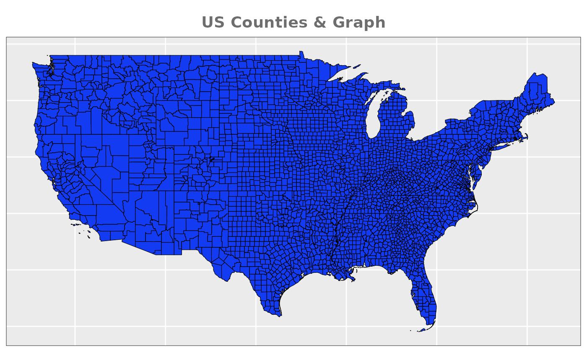
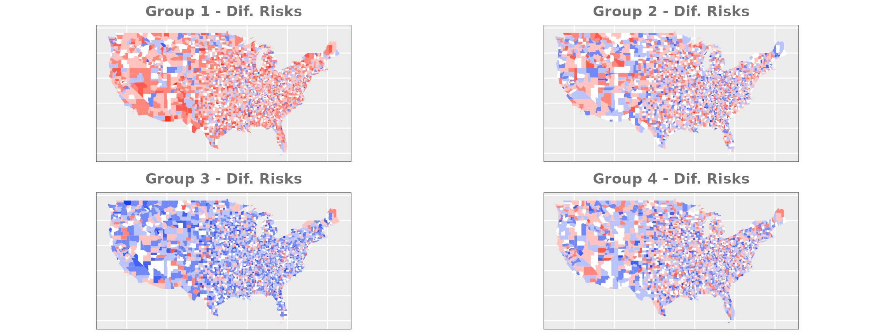
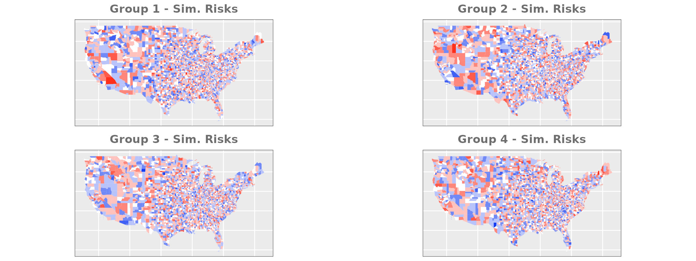
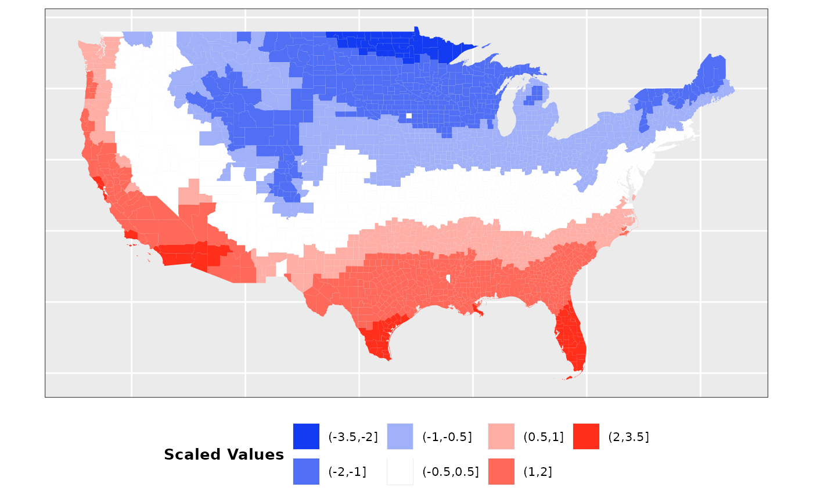
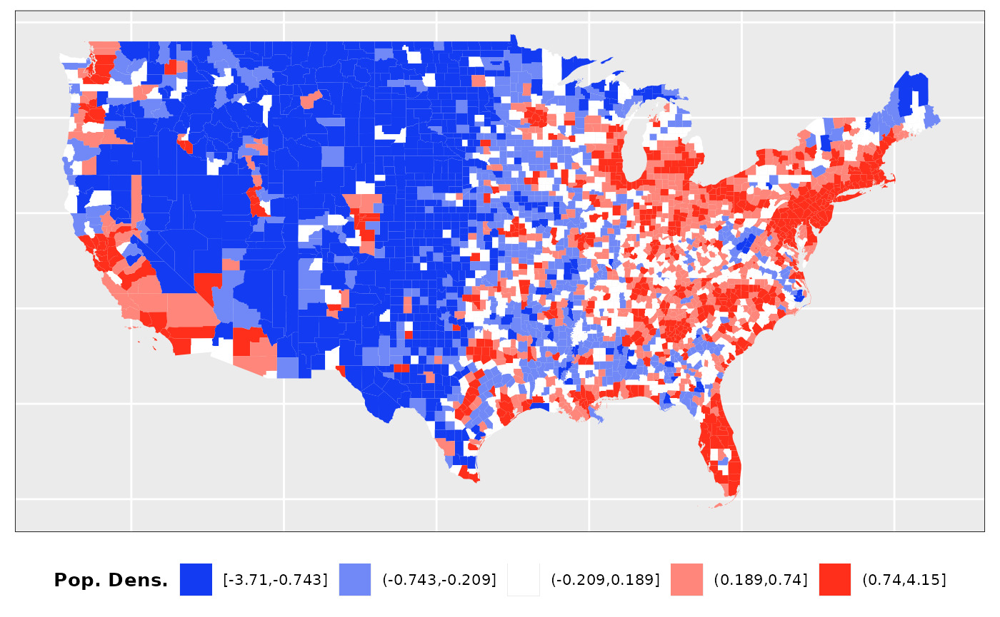
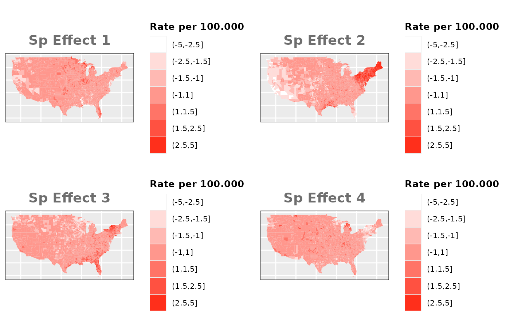
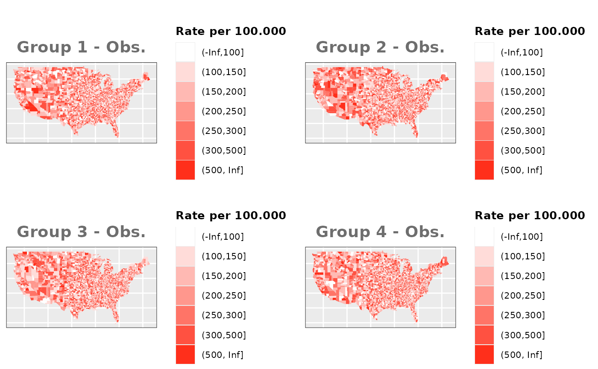
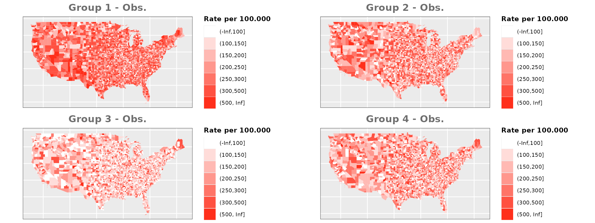

Simulation Study - Data Creation
P. Escobar-Hernandez, A. López-Quílez, F. Palmí-Perales
Source:vignettes/simulation.Rmd
simulation.RmdIntroduction
For the simulation we are going to be
using US Counties that belong to the main continental part. After
downloading from official sources (US
Census Bureau), we need to process the spatial object. Specifically,
we need to trim areas that are not connected to avoid possible problems
that may arise during the INLA approximation caused by a not-fully
connected graph underlying in the spatial effects. This means removing
Alaska and non-continental states, as well as two island counties (San
Juan and Nantucket), and leaving the final number of counties at
3104.

We are going to fix the seed for the random numbers using the number of our ARXIV page and use and average of 100 observations per county, which would be 25 per group if they were equally distributed.
# Set seed for the simulation
set.seed(241021227)
# Total Number of Observations
total_obs <- n_county * 1000 We are going to assume that there are two
existing underlying risk factors that may affect
differently each of the risk groups. One of them presents a clear
north-south gradient, and will be simulated using mean temperatures over
the last 24 months. The second one presents a more diverse spatial
pattern, but is concentrated around highly populated areas and will be
generated using population density. Moreover, we are going to simulate
baseline independent spatial effects, as well as heterogeneity
effects.
Baseline Risks
Finally, we are also going to consider two
different possibilities for each one of the previous conditions:
- Different Risks: our dataset presents severe differentes in the relative risk for each group. In order to make sure that the model is able to detect this differences properly we will use a dataset that presents pronounced differences between the groups.
# Different Risks
us_counties$group1_dif_risk <- rnorm(n_county, 0.3, 0.5)
us_counties$group2_dif_risk <- rnorm(n_county, 0.05, 0.5)
us_counties$group3_dif_risk <- rnorm(n_county, -0.3, 0.5)
us_counties$group4_dif_risk <- rnorm(n_county, -0.05, 0.5)
- Similar Risks: to complement the previous option we will simulate two groups with a fairly similar relative risk.
# Similar Risks
us_counties$group1_sim_risk <- rnorm(n_county, 0, 0.5)
us_counties$group2_sim_risk <- rnorm(n_county, 0, 0.5)
us_counties$group3_sim_risk <- rnorm(n_county, 0, 0.5)
us_counties$group4_sim_risk <- rnorm(n_county, 0, 0.5)
Factor 1: Temperature
Mean temperature between the months of
January 2023 and January 2025 was extracted from official sources. Data
had around 100 missing values that were filled using the mean
temperature across all counties. In addition, values have been scaled to
oscillate between 0.5 and 1.5 so that they have a similar scale to the
rest of the values used. The final distribution of values is the
following:
# Load temp data
temp_data <- temp_data_us_23
temp_data <- temp_data %>% select(Name, State, Value) %>% mutate(STATE_NAME=State, NAMELSAD=Name) %>% select(-State, -Name)
# Merge datasets
us_counties <- left_join(us_counties, temp_data)
us_counties$Value[is.na(us_counties$Value)] <- mean(us_counties$Value, na.rm = TRUE)
us_counties$Temp_Scale <- scale(us_counties$Value)
summary(us_counties$Temp_Scale)## V1
## Min. :-2.41479
## 1st Qu.:-0.75341
## Median :-0.09636
## Mean : 0.00000
## 3rd Qu.: 0.76249
## Max. : 3.41413
Factor 2: Population Density
Population estimates for 2023 were
obtained from official sources. To generate the population density
values we have used the area of land included in the shapefile
downloaded from the census.gov web. This values have been scaled as
well.
# Load population data
cov_data <- pop_data_us_23
cov_data <- cov_data %>% select(STNAME, CTYNAME, POPESTIMATE2023) %>% mutate(STATE_NAME=STNAME, NAMELSAD=CTYNAME) %>% select(-STNAME, -CTYNAME)
cov_data <- cov_data[!duplicated(cov_data), ]
# Merge datasets
us_counties <- left_join(us_counties, cov_data)
us_counties$POPESTIMATE2023[us_counties$NAMELSAD=="Doña Ana County"] <- 225210
us_counties$POP_DENS <- us_counties$POPESTIMATE2023/us_counties$ALAND
us_counties$POP_DENS_Scale <- scale(log(us_counties$POP_DENS))
summary(us_counties$POP_DENS_Scale)## V1
## Min. :-3.710532
## 1st Qu.:-0.558221
## Median :-0.004318
## Mean : 0.000000
## 3rd Qu.: 0.554702
## Max. : 4.149420
# Extract Population variable for use later
POP <- us_counties$POPESTIMATE2023
Independent Spatial Effects
In this case we need to simulate 4
different spatial effects using the function rst() from
the package SUMMER.
sim_sp_ef <- rst(n=4, type = "s", type.s = "ICAR", scale.model = FALSE, Amat = W)
ind.ef.g1 <- ind.ef[1, ]
ind.ef.g2 <- ind.ef[2, ]
ind.ef.g3 <- ind.ef[3, ]
ind.ef.g4 <- ind.ef[4, ]
No Spatial Effect
In this case we are going to assign the
values using only population and the heterogeneity effect simulated for
each group.
Groups with equal risks
# Estimate expected values depending on the population of the county (equal for all model used)
total_pob <- sum(POP)
EXP <- rep((total_obs*POP)/(total_pob*4), 4)
# Estimate the total combination of population and risks
total_pobrisk <- sum(POP * us_counties$group1_sim_risk + POP * us_counties$group2_sim_risk +
POP * us_counties$group3_sim_risk + POP * us_counties$group4_sim_risk)
# Add observed values to sp object for ploting
us_counties$OBS_M0_SIM_G1 <- round(total_obs*((POP * us_counties$group1_sim_risk)/(total_pobrisk)), 0)
us_counties$OBS_M0_SIM_G2 <- round(total_obs*((POP * us_counties$group2_sim_risk)/(total_pobrisk)), 0)
us_counties$OBS_M0_SIM_G3 <- round(total_obs*((POP * us_counties$group3_sim_risk)/(total_pobrisk)), 0)
us_counties$OBS_M0_SIM_G4 <- round(total_obs*((POP * us_counties$group4_sim_risk)/(total_pobrisk)), 0)
# Estimate underlying risk for each group
g1_prk <- us_counties$group1_sim_risk
g2_prk <- us_counties$group2_sim_risk
g3_prk <- us_counties$group3_sim_risk
g4_prk <- us_counties$group4_sim_risk
# Exponential of the underlying risk to match log of the linear predictor
g1_prk <- exp(g1_prk)
g2_prk <- exp(g2_prk)
g3_prk <- exp(g3_prk)
g4_prk <- exp(g4_prk)
data_risk <- data.frame("M0_SIM"=c(g1_prk, g2_prk, g3_prk, g4_prk))
# Estimate the total combination of population and risks
total_pobrisk <- sum(POP * g1_prk + POP * g2_prk + POP * g3_prk + POP * g4_prk)
# Add observed values to sp object for ploting
us_counties$OBS_M0_SIM_G1 <- round(total_obs*((POP * g1_prk)/(total_pobrisk)), 0)
us_counties$OBS_M0_SIM_G2 <- round(total_obs*((POP * g2_prk)/(total_pobrisk)), 0)
us_counties$OBS_M0_SIM_G3 <- round(total_obs*((POP * g3_prk)/(total_pobrisk)), 0)
us_counties$OBS_M0_SIM_G4 <- round(total_obs*((POP * g4_prk)/(total_pobrisk)), 0)
# Create dataframe for M0 models and estimate observed values depending on risks
M0_df <- data.frame("OBS_SIM"=NA, "OBS_DIF"=NA, "EXP"=EXP, TYPE = c(rep(c("G1", "G2", "G3", "G4"), each=nrow(us_counties))), "idx"=1:length(EXP))
M0_df$OBS_SIM <- c(us_counties$OBS_M0_SIM_G1, us_counties$OBS_M0_SIM_G2, us_counties$OBS_M0_SIM_G3, us_counties$OBS_M0_SIM_G4)
# Compensate the different numbers of observed and expected cases caused by decimals
total_dif <- sum(EXP)-sum(M0_df$OBS_SIM)
if(total_dif>0){
r_ids <- round(runif(total_dif, 1, nrow(M0_df)), 0)
M0_df$OBS_SIM[r_ids] <- M0_df$OBS_SIM[r_ids] + 1
}else if(total_dif<0){
r_ids <- round(runif(abs(total_dif), 1, nrow(M0_df)), 0)
M0_df$OBS_SIM[r_ids] <- M0_df$OBS_SIM[r_ids] - 1
}
if(sum(M0_df$OBS_SIM)!=total_obs){warning("Observed values and expected values do not match.")}
Groups with different risks
# Estimate the total combination of population and risks
total_pobrisk <- sum(POP * us_counties$group1_dif_risk + POP * us_counties$group2_dif_risk +
POP * us_counties$group3_dif_risk + POP * us_counties$group4_dif_risk)
# Add observed values to sp object for ploting
us_counties$OBS_M0_DIF_G1 <- round(total_obs*((POP * us_counties$group1_dif_risk)/(total_pobrisk)), 0)
us_counties$OBS_M0_DIF_G2 <- round(total_obs*((POP * us_counties$group2_dif_risk)/(total_pobrisk)), 0)
us_counties$OBS_M0_DIF_G3 <- round(total_obs*((POP * us_counties$group3_dif_risk)/(total_pobrisk)), 0)
us_counties$OBS_M0_DIF_G4 <- round(total_obs*((POP * us_counties$group4_dif_risk)/(total_pobrisk)), 0)
# Estimate underlying risk for each group
g1_prk <- us_counties$group1_dif_risk
g2_prk <- us_counties$group2_dif_risk
g3_prk <- us_counties$group3_dif_risk
g4_prk <- us_counties$group4_dif_risk
# Exponential of the underlying risk to match log of the linear predictor
g1_prk <- exp(g1_prk)
g2_prk <- exp(g2_prk)
g3_prk <- exp(g3_prk)
g4_prk <- exp(g4_prk)
data_risk$M0_DIF <- c(g1_prk, g2_prk, g3_prk, g4_prk)
# Estimate the total combination of population and risks
total_pobrisk <- sum(POP * g1_prk + POP * g2_prk + POP * g3_prk + POP * g4_prk)
# Add observed values to sp object for ploting
us_counties$OBS_M0_DIF_G1 <- round(total_obs*((POP * g1_prk)/(total_pobrisk)), 0)
us_counties$OBS_M0_DIF_G2 <- round(total_obs*((POP * g2_prk)/(total_pobrisk)), 0)
us_counties$OBS_M0_DIF_G3 <- round(total_obs*((POP * g3_prk)/(total_pobrisk)), 0)
us_counties$OBS_M0_DIF_G4 <- round(total_obs*((POP * g4_prk)/(total_pobrisk)), 0)
# Create dataframe for M0 models and estimate observed values depending on risks
M0_df$OBS_DIF <- c(us_counties$OBS_M0_DIF_G1, us_counties$OBS_M0_DIF_G2, us_counties$OBS_M0_DIF_G3, us_counties$OBS_M0_DIF_G4)
# Compensate the different numbers of observed and expected cases caused by decimals
total_dif <- sum(EXP)-sum(M0_df$OBS_DIF)
if(total_dif>0){
r_ids <- round(runif(total_dif, 1, nrow(M0_df)), 0)
M0_df$OBS_DIF[r_ids] <- M0_df$OBS_DIF[r_ids] + 1
}else if(total_dif<0){
r_ids <- round(runif(abs(total_dif), 1, nrow(M0_df)), 0)
M0_df$OBS_DIF[r_ids] <- M0_df$OBS_DIF[r_ids] - 1
}
if(sum(M0_df$OBS_DIF)!=total_obs){warning("Observed values and expected values do not match.")}
Individual Spatial Effects
In this case we need to simulate 4
different spatial effects using the function rst() from
the package SUMMER. Each spatial effect will be
combined with the underlying risk assigned to each county and each
group, and used to distribute the number of observed cases. We will
rescale the spatial effects to be between -1 and 1 so that the assigned
risk groups dont go to far below .
Groups with equal risks
# Estimate underlying risk for each group
g1_prk_v1 <- 1/2*us_counties$group1_sim_risk + 1/2*ind.ef.g2
g2_prk_v1 <- 1/2*us_counties$group2_sim_risk + 1/2*ind.ef.g1
g3_prk_v1 <- 1/2*us_counties$group3_sim_risk + 1/2*ind.ef.g3
g4_prk_v1 <- 1/2*us_counties$group4_sim_risk + 1/2*ind.ef.g4
g1_prk_v2 <- 2/3*us_counties$group1_sim_risk + 1/3*ind.ef.g2
g2_prk_v2 <- 2/3*us_counties$group2_sim_risk + 1/3*ind.ef.g1
g3_prk_v2 <- 2/3*us_counties$group3_sim_risk + 1/3*ind.ef.g3
g4_prk_v2 <- 2/3*us_counties$group4_sim_risk + 1/3*ind.ef.g4
g1_prk_v3 <- 1/3*us_counties$group1_sim_risk + 2/3*ind.ef.g2
g2_prk_v3 <- 1/3*us_counties$group2_sim_risk + 2/3*ind.ef.g1
g3_prk_v3 <- 1/3*us_counties$group3_sim_risk + 2/3*ind.ef.g3
g4_prk_v3 <- 1/3*us_counties$group4_sim_risk + 2/3*ind.ef.g4
# Exponential of the underlying risk to match log of the linear predictor
g1_prk_v1 <- exp(g1_prk_v1)
g2_prk_v1 <- exp(g2_prk_v1)
g3_prk_v1 <- exp(g3_prk_v1)
g4_prk_v1 <- exp(g4_prk_v1)
g1_prk_v2 <- exp(g1_prk_v2)
g2_prk_v2 <- exp(g2_prk_v2)
g3_prk_v2 <- exp(g3_prk_v2)
g4_prk_v2 <- exp(g4_prk_v2)
g1_prk_v3 <- exp(g1_prk_v3)
g2_prk_v3 <- exp(g2_prk_v3)
g3_prk_v3 <- exp(g3_prk_v3)
g4_prk_v3 <- exp(g4_prk_v3)
data_risk$M1_SIM_V1 <- c(g1_prk_v1, g2_prk_v1, g3_prk_v1, g4_prk_v1)
data_risk$M1_SIM_V2 <- c(g1_prk_v2, g2_prk_v2, g3_prk_v2, g4_prk_v2)
data_risk$M1_SIM_V3 <- c(g1_prk_v3, g2_prk_v3, g3_prk_v3, g4_prk_v3)
# Estimate the total combination of population and risks
total_pobrisk_v1 <- sum(POP * g1_prk_v1 + POP * g2_prk_v1 + POP * g3_prk_v1 + POP * g4_prk_v1)
total_pobrisk_v2 <- sum(POP * g1_prk_v2 + POP * g2_prk_v2 + POP * g3_prk_v2 + POP * g4_prk_v2)
total_pobrisk_v3 <- sum(POP * g1_prk_v3 + POP * g2_prk_v3 + POP * g3_prk_v3 + POP * g4_prk_v3)
# Add observed values to sp object for ploting
us_counties$OBS_M1_SIM_G1_v1 <- round(total_obs*((POP * g1_prk_v1)/(total_pobrisk_v1)), 0)
us_counties$OBS_M1_SIM_G2_v1 <- round(total_obs*((POP * g2_prk_v1)/(total_pobrisk_v1)), 0)
us_counties$OBS_M1_SIM_G3_v1 <- round(total_obs*((POP * g3_prk_v1)/(total_pobrisk_v1)), 0)
us_counties$OBS_M1_SIM_G4_v1 <- round(total_obs*((POP * g4_prk_v1)/(total_pobrisk_v1)), 0)
us_counties$OBS_M1_SIM_G1_v2 <- round(total_obs*((POP * g1_prk_v2)/(total_pobrisk_v2)), 0)
us_counties$OBS_M1_SIM_G2_v2 <- round(total_obs*((POP * g2_prk_v2)/(total_pobrisk_v2)), 0)
us_counties$OBS_M1_SIM_G3_v2 <- round(total_obs*((POP * g3_prk_v2)/(total_pobrisk_v2)), 0)
us_counties$OBS_M1_SIM_G4_v2 <- round(total_obs*((POP * g4_prk_v2)/(total_pobrisk_v2)), 0)
us_counties$OBS_M1_SIM_G1_v3 <- round(total_obs*((POP * g1_prk_v3)/(total_pobrisk_v3)), 0)
us_counties$OBS_M1_SIM_G2_v3 <- round(total_obs*((POP * g2_prk_v3)/(total_pobrisk_v3)), 0)
us_counties$OBS_M1_SIM_G3_v3 <- round(total_obs*((POP * g3_prk_v3)/(total_pobrisk_v3)), 0)
us_counties$OBS_M1_SIM_G4_v3 <- round(total_obs*((POP * g4_prk_v3)/(total_pobrisk_v3)), 0)
# Create dataframe for M0 models and estimate observed values depending on risks
M1_df <- data.frame("OBS_SIM_v1"=NA, "OBS_DIF_v1"=NA, "OBS_SIM_v2"=NA, "OBS_DIF_v2"=NA, "OBS_SIM_v3"=NA, "OBS_DIF_v3"=NA, "EXP"=EXP,
TYPE = c(rep(c("G1", "G2", "G3", "G4"), each=nrow(us_counties))), "idx"=1:length(EXP))
M1_df$OBS_SIM_v1 <- c(us_counties$OBS_M1_SIM_G1_v1, us_counties$OBS_M1_SIM_G2_v1, us_counties$OBS_M1_SIM_G3_v1, us_counties$OBS_M1_SIM_G4_v1)
M1_df$OBS_SIM_v2 <- c(us_counties$OBS_M1_SIM_G1_v2, us_counties$OBS_M1_SIM_G2_v2, us_counties$OBS_M1_SIM_G3_v2, us_counties$OBS_M1_SIM_G4_v2)
M1_df$OBS_SIM_v3 <- c(us_counties$OBS_M1_SIM_G1_v3, us_counties$OBS_M1_SIM_G2_v3, us_counties$OBS_M1_SIM_G3_v3, us_counties$OBS_M1_SIM_G4_v3)
# Compensate the different numbers of observed and expected cases caused by decimals
total_dif_v1 <- sum(EXP)-sum(M1_df$OBS_SIM_v1)
total_dif_v2 <- sum(EXP)-sum(M1_df$OBS_SIM_v2)
total_dif_v3 <- sum(EXP)-sum(M1_df$OBS_SIM_v3)
if(total_dif_v1>0){
r_ids <- round(runif(total_dif_v1, 1, nrow(M1_df)), 0)
M1_df$OBS_SIM_v1[r_ids] <- M1_df$OBS_SIM_v1[r_ids] + 1
}else if(total_dif_v1<0){
r_ids <- round(runif(abs(total_dif_v1), 1, nrow(M1_df)), 0)
M1_df$OBS_SIM_v1[r_ids] <- M1_df$OBS_SIM_v1[r_ids] - 1
}
if(total_dif_v2>0){
r_ids <- sample(nrow(M1_df), total_dif_v2)
M1_df$OBS_SIM_v2[r_ids] <- M1_df$OBS_SIM_v2[r_ids] + 1
}else if(total_dif_v2<0){
r_ids <- round(runif(abs(total_dif_v2), 1, nrow(M1_df)), 0)
M1_df$OBS_SIM_v2[r_ids] <- M1_df$OBS_SIM_v2[r_ids] - 1
}
if(total_dif_v3>0){
r_ids <- round(runif(total_dif_v3, 1, nrow(M1_df)), 0)
M1_df$OBS_SIM_v3[r_ids] <- M1_df$OBS_SIM_v3[r_ids] + 1
}else if(total_dif_v3<0){
r_ids <- round(runif(abs(total_dif_v3), 1, nrow(M1_df)), 0)
M1_df$OBS_SIM_v3[r_ids] <- M1_df$OBS_SIM_v3[r_ids] - 1
}Groups with different risks
Just like in the previous section, we
generate the same underlying risks by adding the underlying simulated
risk for each county and group to each different spatial effect. The
following figure represents the final rates after dividing the number of
cases among the counties using the total risk assigned.
# Estimate underlying risk for each group
g1_prk_v1 <- 1/2*us_counties$group1_dif_risk + 1/2*ind.ef.g2
g2_prk_v1 <- 1/2*us_counties$group2_dif_risk + 1/2*ind.ef.g1
g3_prk_v1 <- 1/2*us_counties$group3_dif_risk + 1/2*ind.ef.g3
g4_prk_v1 <- 1/2*us_counties$group4_dif_risk + 1/2*ind.ef.g4
g1_prk_v2 <- 2/3*us_counties$group1_dif_risk + 1/3*ind.ef.g2
g2_prk_v2 <- 2/3*us_counties$group2_dif_risk + 1/3*ind.ef.g1
g3_prk_v2 <- 2/3*us_counties$group3_dif_risk + 1/3*ind.ef.g3
g4_prk_v2 <- 2/3*us_counties$group4_dif_risk + 1/3*ind.ef.g4
g1_prk_v3 <- 1/3*us_counties$group1_dif_risk + 2/3*ind.ef.g2
g2_prk_v3 <- 1/3*us_counties$group2_dif_risk + 2/3*ind.ef.g1
g3_prk_v3 <- 1/3*us_counties$group3_dif_risk + 2/3*ind.ef.g3
g4_prk_v3 <- 1/3*us_counties$group4_dif_risk + 2/3*ind.ef.g4
# Exponential of the underlying risk to match log of the linear predictor
g1_prk_v1 <- exp(g1_prk_v1)
g2_prk_v1 <- exp(g2_prk_v1)
g3_prk_v1 <- exp(g3_prk_v1)
g4_prk_v1 <- exp(g4_prk_v1)
g1_prk_v2 <- exp(g1_prk_v2)
g2_prk_v2 <- exp(g2_prk_v2)
g3_prk_v2 <- exp(g3_prk_v2)
g4_prk_v2 <- exp(g4_prk_v2)
g1_prk_v3 <- exp(g1_prk_v3)
g2_prk_v3 <- exp(g2_prk_v3)
g3_prk_v3 <- exp(g3_prk_v3)
g4_prk_v3 <- exp(g4_prk_v3)
data_risk$M1_DIF_V1 <- c(g1_prk_v1, g2_prk_v1, g3_prk_v1, g4_prk_v1)
data_risk$M1_DIF_V2 <- c(g1_prk_v2, g2_prk_v2, g3_prk_v2, g4_prk_v2)
data_risk$M1_DIF_V3 <- c(g1_prk_v3, g2_prk_v3, g3_prk_v3, g4_prk_v3)
# Estimate the total combination of population and risks
total_pobrisk_v1 <- sum(POP * g1_prk_v1 + POP * g2_prk_v1 + POP * g3_prk_v1 + POP * g4_prk_v1)
total_pobrisk_v2 <- sum(POP * g1_prk_v2 + POP * g2_prk_v2 + POP * g3_prk_v2 + POP * g4_prk_v2)
total_pobrisk_v3 <- sum(POP * g1_prk_v3 + POP * g2_prk_v3 + POP * g3_prk_v3 + POP * g4_prk_v3)
# Add observed values to sp object for ploting
us_counties$OBS_M1_DIF_G1_v1 <- round(total_obs*((POP * g1_prk_v1)/(total_pobrisk_v1)), 0)
us_counties$OBS_M1_DIF_G2_v1 <- round(total_obs*((POP * g2_prk_v1)/(total_pobrisk_v1)), 0)
us_counties$OBS_M1_DIF_G3_v1 <- round(total_obs*((POP * g3_prk_v1)/(total_pobrisk_v1)), 0)
us_counties$OBS_M1_DIF_G4_v1 <- round(total_obs*((POP * g4_prk_v1)/(total_pobrisk_v1)), 0)
us_counties$OBS_M1_DIF_G1_v2 <- round(total_obs*((POP * g1_prk_v2)/(total_pobrisk_v2)), 0)
us_counties$OBS_M1_DIF_G2_v2 <- round(total_obs*((POP * g2_prk_v2)/(total_pobrisk_v2)), 0)
us_counties$OBS_M1_DIF_G3_v2 <- round(total_obs*((POP * g3_prk_v2)/(total_pobrisk_v2)), 0)
us_counties$OBS_M1_DIF_G4_v2 <- round(total_obs*((POP * g4_prk_v2)/(total_pobrisk_v2)), 0)
us_counties$OBS_M1_DIF_G1_v3 <- round(total_obs*((POP * g1_prk_v3)/(total_pobrisk_v3)), 0)
us_counties$OBS_M1_DIF_G2_v3 <- round(total_obs*((POP * g2_prk_v3)/(total_pobrisk_v3)), 0)
us_counties$OBS_M1_DIF_G3_v3 <- round(total_obs*((POP * g3_prk_v3)/(total_pobrisk_v3)), 0)
us_counties$OBS_M1_DIF_G4_v3 <- round(total_obs*((POP * g4_prk_v3)/(total_pobrisk_v3)), 0)
# Create dataframe for M0 models and estimate observed values depending on risks
M1_df$OBS_DIF_v1 <- c(us_counties$OBS_M1_DIF_G1_v1, us_counties$OBS_M1_DIF_G2_v1, us_counties$OBS_M1_DIF_G3_v1, us_counties$OBS_M1_DIF_G4_v1)
M1_df$OBS_DIF_v2 <- c(us_counties$OBS_M1_DIF_G1_v2, us_counties$OBS_M1_DIF_G2_v2, us_counties$OBS_M1_DIF_G3_v2, us_counties$OBS_M1_DIF_G4_v2)
M1_df$OBS_DIF_v3 <- c(us_counties$OBS_M1_DIF_G1_v3, us_counties$OBS_M1_DIF_G2_v3, us_counties$OBS_M1_DIF_G3_v3, us_counties$OBS_M1_DIF_G4_v3)
# Compensate the different numbers of observed and expected cases caused by decimals
total_dif_v1 <- sum(EXP)-sum(M1_df$OBS_DIF_v1)
total_dif_v2 <- sum(EXP)-sum(M1_df$OBS_DIF_v2)
total_dif_v3 <- sum(EXP)-sum(M1_df$OBS_DIF_v3)
if(total_dif_v1>0){
r_ids <- sample(nrow(M1_df), abs(total_dif_v1))
M1_df$OBS_DIF_v1[r_ids] <- M1_df$OBS_DIF_v1[r_ids] + 1
}else if(total_dif_v1<0){
r_ids <- sample(nrow(M1_df), abs(total_dif_v1))
M1_df$OBS_DIF_v1[r_ids] <- M1_df$OBS_DIF_v1[r_ids] - 1
}
if(total_dif_v2>0){
r_ids <- sample(nrow(M1_df), abs(total_dif_v2))
M1_df$OBS_DIF_v2[r_ids] <- M1_df$OBS_DIF_v2[r_ids] + 1
}else if(total_dif_v2<0){
r_ids <- sample(nrow(M1_df), abs(total_dif_v2))
M1_df$OBS_DIF_v2[r_ids] <- M1_df$OBS_DIF_v2[r_ids] - 1
}
if(total_dif_v3>0){
r_ids <- sample(nrow(M1_df), abs(total_dif_v3))
M1_df$OBS_DIF_v3[r_ids] <- M1_df$OBS_DIF_v3[r_ids] + 1
}else if(total_dif_v3<0){
r_ids <- sample(nrow(M1_df), abs(total_dif_v3))
M1_df$OBS_DIF_v3[r_ids] <- M1_df$OBS_DIF_v3[r_ids] - 1
}Shared Spatial Effect
Groups with equal risks
# Estimate underlying risk for each group
g1_prk_v1 <- 1/2*us_counties$group1_sim_risk + 1/2*ind.ef.g2
g2_prk_v1 <- 1/2*us_counties$group2_sim_risk + 1/2*ind.ef.g2
g3_prk_v1 <- 1/2*us_counties$group3_sim_risk + 1/2*ind.ef.g2
g4_prk_v1 <- 1/2*us_counties$group4_sim_risk + 1/2*ind.ef.g2
g1_prk_v2 <- 2/3*us_counties$group1_sim_risk + 1/3*ind.ef.g2
g2_prk_v2 <- 2/3*us_counties$group2_sim_risk + 1/3*ind.ef.g2
g3_prk_v2 <- 2/3*us_counties$group3_sim_risk + 1/3*ind.ef.g2
g4_prk_v2 <- 2/3*us_counties$group4_sim_risk + 1/3*ind.ef.g2
g1_prk_v3 <- 1/3*us_counties$group1_sim_risk + 2/3*ind.ef.g2
g2_prk_v3 <- 1/3*us_counties$group2_sim_risk + 2/3*ind.ef.g2
g3_prk_v3 <- 1/3*us_counties$group3_sim_risk + 2/3*ind.ef.g2
g4_prk_v3 <- 1/3*us_counties$group4_sim_risk + 2/3*ind.ef.g2
# Exponential of the underlying risk to match log of the linear predictor
g1_prk_v1 <- exp(g1_prk_v1)
g2_prk_v1 <- exp(g2_prk_v1)
g3_prk_v1 <- exp(g3_prk_v1)
g4_prk_v1 <- exp(g4_prk_v1)
g1_prk_v2 <- exp(g1_prk_v2)
g2_prk_v2 <- exp(g2_prk_v2)
g3_prk_v2 <- exp(g3_prk_v2)
g4_prk_v2 <- exp(g4_prk_v2)
g1_prk_v3 <- exp(g1_prk_v3)
g2_prk_v3 <- exp(g2_prk_v3)
g3_prk_v3 <- exp(g3_prk_v3)
g4_prk_v3 <- exp(g4_prk_v3)
data_risk$M2_SIM_V1 <- c(g1_prk_v1, g2_prk_v1, g3_prk_v1, g4_prk_v1)
data_risk$M2_SIM_V2 <- c(g1_prk_v2, g2_prk_v2, g3_prk_v2, g4_prk_v2)
data_risk$M2_SIM_V3 <- c(g1_prk_v3, g2_prk_v3, g3_prk_v3, g4_prk_v3)
# Estimate the total combination of population and risks
total_pobrisk_v1 <- sum(POP * g1_prk_v1 + POP * g2_prk_v1 + POP * g3_prk_v1 + POP * g4_prk_v1)
total_pobrisk_v2 <- sum(POP * g1_prk_v2 + POP * g2_prk_v2 + POP * g3_prk_v2 + POP * g4_prk_v2)
total_pobrisk_v3 <- sum(POP * g1_prk_v3 + POP * g2_prk_v3 + POP * g3_prk_v3 + POP * g4_prk_v3)
# Add observed values to sp object for ploting
us_counties$OBS_M2_SIM_G1_v1 <- round(total_obs*((POP * g1_prk_v1)/(total_pobrisk_v1)), 0)
us_counties$OBS_M2_SIM_G2_v1 <- round(total_obs*((POP * g2_prk_v1)/(total_pobrisk_v1)), 0)
us_counties$OBS_M2_SIM_G3_v1 <- round(total_obs*((POP * g3_prk_v1)/(total_pobrisk_v1)), 0)
us_counties$OBS_M2_SIM_G4_v1 <- round(total_obs*((POP * g4_prk_v1)/(total_pobrisk_v1)), 0)
us_counties$OBS_M2_SIM_G1_v2 <- round(total_obs*((POP * g1_prk_v2)/(total_pobrisk_v2)), 0)
us_counties$OBS_M2_SIM_G2_v2 <- round(total_obs*((POP * g2_prk_v2)/(total_pobrisk_v2)), 0)
us_counties$OBS_M2_SIM_G3_v2 <- round(total_obs*((POP * g3_prk_v2)/(total_pobrisk_v2)), 0)
us_counties$OBS_M2_SIM_G4_v2 <- round(total_obs*((POP * g4_prk_v2)/(total_pobrisk_v2)), 0)
us_counties$OBS_M2_SIM_G1_v3 <- round(total_obs*((POP * g1_prk_v3)/(total_pobrisk_v3)), 0)
us_counties$OBS_M2_SIM_G2_v3 <- round(total_obs*((POP * g2_prk_v3)/(total_pobrisk_v3)), 0)
us_counties$OBS_M2_SIM_G3_v3 <- round(total_obs*((POP * g3_prk_v3)/(total_pobrisk_v3)), 0)
us_counties$OBS_M2_SIM_G4_v3 <- round(total_obs*((POP * g4_prk_v3)/(total_pobrisk_v3)), 0)
# Create dataframe for M0 models and estimate observed values depending on risks
M2_df <- data.frame("OBS_SIM_v1"=NA, "OBS_DIF_v1"=NA, "OBS_SIM_v2"=NA, "OBS_DIF_v2"=NA, "OBS_SIM_v3"=NA, "OBS_DIF_v3"=NA,"EXP"=EXP,
TYPE = c(rep(c("G1", "G2", "G3", "G4"), each=nrow(us_counties))), "idx"=1:length(EXP))
M2_df$OBS_SIM_v1 <- c(us_counties$OBS_M2_SIM_G1_v1, us_counties$OBS_M2_SIM_G2_v1, us_counties$OBS_M2_SIM_G3_v1, us_counties$OBS_M2_SIM_G4_v1)
M2_df$OBS_SIM_v2 <- c(us_counties$OBS_M2_SIM_G1_v2, us_counties$OBS_M2_SIM_G2_v2, us_counties$OBS_M2_SIM_G3_v2, us_counties$OBS_M2_SIM_G4_v2)
M2_df$OBS_SIM_v3 <- c(us_counties$OBS_M2_SIM_G1_v3, us_counties$OBS_M2_SIM_G2_v3, us_counties$OBS_M2_SIM_G3_v3, us_counties$OBS_M2_SIM_G4_v3)
# Compensate the different numbers of observed and expected cases caused by decimals
total_dif_v1 <- sum(EXP)-sum(M2_df$OBS_SIM_v1)
total_dif_v2 <- sum(EXP)-sum(M2_df$OBS_SIM_v2)
total_dif_v3 <- sum(EXP)-sum(M2_df$OBS_SIM_v3)
if(total_dif_v1>0){
r_ids <- sample(1:nrow(M2_df), abs(total_dif_v1))
M2_df$OBS_SIM_v1[r_ids] <- M2_df$OBS_SIM_v1[r_ids] + 1
}else if(total_dif_v1<0){
r_ids <- sample(1:nrow(M2_df), abs(total_dif_v1))
M2_df$OBS_SIM_v1[r_ids] <- M2_df$OBS_SIM_v1[r_ids] - 1
}
if(total_dif_v2>0){
r_ids <- sample(1:nrow(M2_df), abs(total_dif_v2))
M2_df$OBS_SIM_v2[r_ids] <- M2_df$OBS_SIM_v2[r_ids] + 1
}else if(total_dif_v2<0){
r_ids <- sample(1:nrow(M2_df), abs(total_dif_v2))
M2_df$OBS_SIM_v2[r_ids] <- M2_df$OBS_SIM_v2[r_ids] - 1
}
if(total_dif_v3>0){
r_ids <- sample(1:nrow(M2_df), abs(total_dif_v3))
M2_df$OBS_SIM_v3[r_ids] <- M2_df$OBS_SIM_v3[r_ids] + 1
}else if(total_dif_v3<0){
r_ids <- sample(1:nrow(M2_df), abs(total_dif_v3))
M2_df$OBS_SIM_v3[r_ids] <- M2_df$OBS_SIM_v3[r_ids] - 1
}Groups with different risks
Just like in the previous section, we
generate the same underlying risks by adding the underlying simulated
risk for each county and group to each different spatial effect. The
following figure represents the final rates after dividing the number of
cases among the counties using the total risk assigned.
# Estimate underlying risk for each group
g1_prk_v1 <- 1/2*us_counties$group1_dif_risk + 1/2*ind.ef.g2
g2_prk_v1 <- 1/2*us_counties$group2_dif_risk + 1/2*ind.ef.g2
g3_prk_v1 <- 1/2*us_counties$group3_dif_risk + 1/2*ind.ef.g2
g4_prk_v1 <- 1/2*us_counties$group4_dif_risk + 1/2*ind.ef.g2
g1_prk_v2 <- 2/3*us_counties$group1_dif_risk + 1/3*ind.ef.g2
g2_prk_v2 <- 2/3*us_counties$group2_dif_risk + 1/3*ind.ef.g2
g3_prk_v2 <- 2/3*us_counties$group3_dif_risk + 1/3*ind.ef.g2
g4_prk_v2 <- 2/3*us_counties$group4_dif_risk + 1/3*ind.ef.g2
g1_prk_v3 <- 1/3*us_counties$group1_dif_risk + 2/3*ind.ef.g2
g2_prk_v3 <- 1/3*us_counties$group2_dif_risk + 2/3*ind.ef.g2
g3_prk_v3 <- 1/3*us_counties$group3_dif_risk + 2/3*ind.ef.g2
g4_prk_v3 <- 1/3*us_counties$group4_dif_risk + 2/3*ind.ef.g2
# Exponential of the underlying risk to match log of the linear predictor
g1_prk_v1 <- exp(g1_prk_v1)
g2_prk_v1 <- exp(g2_prk_v1)
g3_prk_v1 <- exp(g3_prk_v1)
g4_prk_v1 <- exp(g4_prk_v1)
g1_prk_v2 <- exp(g1_prk_v2)
g2_prk_v2 <- exp(g2_prk_v2)
g3_prk_v2 <- exp(g3_prk_v2)
g4_prk_v2 <- exp(g4_prk_v2)
g1_prk_v3 <- exp(g1_prk_v3)
g2_prk_v3 <- exp(g2_prk_v3)
g3_prk_v3 <- exp(g3_prk_v3)
g4_prk_v3 <- exp(g4_prk_v3)
data_risk$M2_DIF_V1 <- c(g1_prk_v1, g2_prk_v1, g3_prk_v1, g4_prk_v1)
data_risk$M2_DIF_V2 <- c(g1_prk_v2, g2_prk_v2, g3_prk_v2, g4_prk_v2)
data_risk$M2_DIF_V3 <- c(g1_prk_v3, g2_prk_v3, g3_prk_v3, g4_prk_v3)
# Estimate the total combination of population and risks
total_pobrisk_v1 <- sum(POP * g1_prk_v1 + POP * g2_prk_v1 + POP * g3_prk_v1 + POP * g4_prk_v1)
total_pobrisk_v2 <- sum(POP * g1_prk_v2 + POP * g2_prk_v2 + POP * g3_prk_v2 + POP * g4_prk_v2)
total_pobrisk_v3 <- sum(POP * g1_prk_v3 + POP * g2_prk_v3 + POP * g3_prk_v3 + POP * g4_prk_v3)
# Add observed values to sp object for ploting
us_counties$OBS_M2_DIF_G1_v1 <- round(total_obs*((POP * g1_prk_v1)/(total_pobrisk_v1)), 0)
us_counties$OBS_M2_DIF_G2_v1 <- round(total_obs*((POP * g2_prk_v1)/(total_pobrisk_v1)), 0)
us_counties$OBS_M2_DIF_G3_v1 <- round(total_obs*((POP * g3_prk_v1)/(total_pobrisk_v1)), 0)
us_counties$OBS_M2_DIF_G4_v1 <- round(total_obs*((POP * g4_prk_v1)/(total_pobrisk_v1)), 0)
us_counties$OBS_M2_DIF_G1_v2 <- round(total_obs*((POP * g1_prk_v2)/(total_pobrisk_v2)), 0)
us_counties$OBS_M2_DIF_G2_v2 <- round(total_obs*((POP * g2_prk_v2)/(total_pobrisk_v2)), 0)
us_counties$OBS_M2_DIF_G3_v2 <- round(total_obs*((POP * g3_prk_v2)/(total_pobrisk_v2)), 0)
us_counties$OBS_M2_DIF_G4_v2 <- round(total_obs*((POP * g4_prk_v2)/(total_pobrisk_v2)), 0)
us_counties$OBS_M2_DIF_G1_v3 <- round(total_obs*((POP * g1_prk_v3)/(total_pobrisk_v3)), 0)
us_counties$OBS_M2_DIF_G2_v3 <- round(total_obs*((POP * g2_prk_v3)/(total_pobrisk_v3)), 0)
us_counties$OBS_M2_DIF_G3_v3 <- round(total_obs*((POP * g3_prk_v3)/(total_pobrisk_v3)), 0)
us_counties$OBS_M2_DIF_G4_v3 <- round(total_obs*((POP * g4_prk_v3)/(total_pobrisk_v3)), 0)
# Create dataframe for M0 models and estimate observed values depending on risks
M2_df$OBS_DIF_v1 <- c(us_counties$OBS_M2_DIF_G1_v1, us_counties$OBS_M2_DIF_G2_v1, us_counties$OBS_M2_DIF_G3_v1, us_counties$OBS_M2_DIF_G4_v1)
M2_df$OBS_DIF_v2 <- c(us_counties$OBS_M2_DIF_G1_v2, us_counties$OBS_M2_DIF_G2_v2, us_counties$OBS_M2_DIF_G3_v2, us_counties$OBS_M2_DIF_G4_v2)
M2_df$OBS_DIF_v3 <- c(us_counties$OBS_M2_DIF_G1_v3, us_counties$OBS_M2_DIF_G2_v3, us_counties$OBS_M2_DIF_G3_v3, us_counties$OBS_M2_DIF_G4_v3)
# Compensate the different numbers of observed and expected cases caused by decimals
total_dif_v1 <- sum(EXP)-sum(M2_df$OBS_DIF_v1)
total_dif_v2 <- sum(EXP)-sum(M2_df$OBS_DIF_v2)
total_dif_v3 <- sum(EXP)-sum(M2_df$OBS_DIF_v3)
if(total_dif_v1>0){
r_ids <- sample(1:nrow(M2_df), abs(total_dif_v1))
M2_df$OBS_DIF_v1[r_ids] <- M2_df$OBS_DIF_v1[r_ids] + 1
}else if(total_dif_v1<0){
r_ids <- sample(1:nrow(M2_df), abs(total_dif_v1))
M2_df$OBS_DIF_v1[r_ids] <- M2_df$OBS_DIF_v1[r_ids] - 1
}
if(total_dif_v2>0){
r_ids <- sample(1:nrow(M2_df), abs(total_dif_v2))
M2_df$OBS_DIF_v2[r_ids] <- M2_df$OBS_DIF_v2[r_ids] + 1
}else if(total_dif_v2<0){
r_ids <- sample(1:nrow(M2_df), abs(total_dif_v2))
M2_df$OBS_DIF_v2[r_ids] <- M2_df$OBS_DIF_v2[r_ids] - 1
}
if(total_dif_v3>0){
r_ids <- sample(1:nrow(M2_df), abs(total_dif_v3))
M2_df$OBS_DIF_v3[r_ids] <- M2_df$OBS_DIF_v3[r_ids] + 1
}else if(total_dif_v3<0){
r_ids <- sample(1:nrow(M2_df), abs(total_dif_v3))
M2_df$OBS_DIF_v3[r_ids] <- M2_df$OBS_DIF_v3[r_ids] - 1
}Factor 2 Spatial Effect (Rural-Urban)
Groups with equal risks
# Estimate underlying risk for each group
g1_prk_v1 <- 1/2*us_counties$group1_sim_risk + 1/2*ind.ef.g2
g2_prk_v1 <- 1/2*us_counties$group2_sim_risk + 1/2*ind.ef.g2
g3_prk_v1 <- 1/3*us_counties$group3_sim_risk + 1/3*ind.ef.g2 + 1/3*us_counties$POP_DENS_Scale
g4_prk_v1 <- 1/3*us_counties$group4_sim_risk + 1/3*ind.ef.g2 + 1/3*us_counties$POP_DENS_Scale
g1_prk_v2 <- 2/3*us_counties$group1_sim_risk + 1/3*ind.ef.g2
g2_prk_v2 <- 2/3*us_counties$group2_sim_risk + 1/3*ind.ef.g2
g3_prk_v2 <- 14/25*us_counties$group3_sim_risk + 7/25*ind.ef.g2 + 4/25*us_counties$POP_DENS_Scale
g4_prk_v2 <- 14/25*us_counties$group4_sim_risk + 7/25*ind.ef.g2 + 4/25*us_counties$POP_DENS_Scale
g1_prk_v3 <- 1/3*us_counties$group1_sim_risk + 2/3*ind.ef.g2
g2_prk_v3 <- 1/3*us_counties$group2_sim_risk + 2/3*ind.ef.g2
g3_prk_v3 <- 4/25*us_counties$group3_sim_risk + 7/25*ind.ef.g2 + 14/25*us_counties$POP_DENS_Scale
g4_prk_v3 <- 4/25*us_counties$group4_sim_risk + 7/25*ind.ef.g2 + 14/25*us_counties$POP_DENS_Scale
# Exponential of the underlying risk to match log of the linear predictor
g1_prk_v1 <- exp(g1_prk_v1)
g2_prk_v1 <- exp(g2_prk_v1)
g3_prk_v1 <- exp(g3_prk_v1)
g4_prk_v1 <- exp(g4_prk_v1)
g1_prk_v2 <- exp(g1_prk_v2)
g2_prk_v2 <- exp(g2_prk_v2)
g3_prk_v2 <- exp(g3_prk_v2)
g4_prk_v2 <- exp(g4_prk_v2)
g1_prk_v3 <- exp(g1_prk_v3)
g2_prk_v3 <- exp(g2_prk_v3)
g3_prk_v3 <- exp(g3_prk_v3)
g4_prk_v3 <- exp(g4_prk_v3)
data_risk$M3_SIM_V1 <- c(g1_prk_v1, g2_prk_v1, g3_prk_v1, g4_prk_v1)
data_risk$M3_SIM_V2 <- c(g1_prk_v2, g2_prk_v2, g3_prk_v2, g4_prk_v2)
data_risk$M3_SIM_V3 <- c(g1_prk_v3, g2_prk_v3, g3_prk_v3, g4_prk_v3)
# Estimate the total combination of population and risks
total_pobrisk_v1 <- sum(POP * g1_prk_v1 + POP * g2_prk_v1 + POP * g3_prk_v1 + POP * g4_prk_v1)
total_pobrisk_v2 <- sum(POP * g1_prk_v2 + POP * g2_prk_v2 + POP * g3_prk_v2 + POP * g4_prk_v2)
total_pobrisk_v3 <- sum(POP * g1_prk_v3 + POP * g2_prk_v3 + POP * g3_prk_v3 + POP * g4_prk_v3)
# Add observed values to sp object for ploting
us_counties$OBS_M3_SIM_G1_v1 <- round(total_obs*((POP * g1_prk_v1)/(total_pobrisk_v1)), 0)
us_counties$OBS_M3_SIM_G2_v1 <- round(total_obs*((POP * g2_prk_v1)/(total_pobrisk_v1)), 0)
us_counties$OBS_M3_SIM_G3_v1 <- round(total_obs*((POP * g3_prk_v1)/(total_pobrisk_v1)), 0)
us_counties$OBS_M3_SIM_G4_v1 <- round(total_obs*((POP * g4_prk_v1)/(total_pobrisk_v1)), 0)
us_counties$OBS_M3_SIM_G1_v2 <- round(total_obs*((POP * g1_prk_v2)/(total_pobrisk_v2)), 0)
us_counties$OBS_M3_SIM_G2_v2 <- round(total_obs*((POP * g2_prk_v2)/(total_pobrisk_v2)), 0)
us_counties$OBS_M3_SIM_G3_v2 <- round(total_obs*((POP * g3_prk_v2)/(total_pobrisk_v2)), 0)
us_counties$OBS_M3_SIM_G4_v2 <- round(total_obs*((POP * g4_prk_v2)/(total_pobrisk_v2)), 0)
us_counties$OBS_M3_SIM_G1_v3 <- round(total_obs*((POP * g1_prk_v3)/(total_pobrisk_v3)), 0)
us_counties$OBS_M3_SIM_G2_v3 <- round(total_obs*((POP * g2_prk_v3)/(total_pobrisk_v3)), 0)
us_counties$OBS_M3_SIM_G3_v3 <- round(total_obs*((POP * g3_prk_v3)/(total_pobrisk_v3)), 0)
us_counties$OBS_M3_SIM_G4_v3 <- round(total_obs*((POP * g4_prk_v3)/(total_pobrisk_v3)), 0)
# Create dataframe for M0 models and estimate observed values depending on risks
M3_df <- data.frame("OBS_SIM_v1"=NA, "OBS_DIF_v1"=NA, "OBS_SIM_v2"=NA, "OBS_DIF_v2"=NA, "OBS_SIM_v3"=NA, "OBS_DIF_v3"=NA, "EXP"=EXP,
TYPE = c(rep(c("G1", "G2", "G3", "G4"), each=nrow(us_counties))), "idx"=1:length(EXP))
M3_df$OBS_SIM_v1 <- c(us_counties$OBS_M3_SIM_G1_v1, us_counties$OBS_M3_SIM_G2_v1, us_counties$OBS_M3_SIM_G3_v1, us_counties$OBS_M3_SIM_G4_v1)
M3_df$OBS_SIM_v2 <- c(us_counties$OBS_M3_SIM_G1_v2, us_counties$OBS_M3_SIM_G2_v2, us_counties$OBS_M3_SIM_G3_v2, us_counties$OBS_M3_SIM_G4_v2)
M3_df$OBS_SIM_v3 <- c(us_counties$OBS_M3_SIM_G1_v3, us_counties$OBS_M3_SIM_G2_v3, us_counties$OBS_M3_SIM_G3_v3, us_counties$OBS_M3_SIM_G4_v3)
# Compensate the different numbers of observed and expected cases caused by decimals
total_dif_v1 <- sum(EXP)-sum(M3_df$OBS_SIM_v1)
total_dif_v2 <- sum(EXP)-sum(M3_df$OBS_SIM_v2)
total_dif_v3 <- sum(EXP)-sum(M3_df$OBS_SIM_v3)
if(total_dif_v1>0){
r_ids <- sample(1:nrow(M3_df), abs(total_dif_v1))
M3_df$OBS_SIM_v1[r_ids] <- M3_df$OBS_SIM_v1[r_ids] + 1
}else if(total_dif_v1<0){
r_ids <- sample(1:nrow(M3_df), abs(total_dif_v1))
M3_df$OBS_SIM_v1[r_ids] <- M3_df$OBS_SIM_v1[r_ids] - 1
}
if(total_dif_v2>0){
r_ids <- sample(1:nrow(M3_df), abs(total_dif_v2))
M3_df$OBS_SIM_v2[r_ids] <- M3_df$OBS_SIM_v2[r_ids] + 1
}else if(total_dif_v2<0){
r_ids <- sample(1:nrow(M3_df), abs(total_dif_v2))
M3_df$OBS_SIM_v2[r_ids] <- M3_df$OBS_SIM_v2[r_ids] - 1
}
if(total_dif_v3>0){
r_ids <- sample(1:nrow(M3_df), abs(total_dif_v3))
M3_df$OBS_SIM_v3[r_ids] <- M3_df$OBS_SIM_v3[r_ids] + 1
}else if(total_dif_v3<0){
r_ids <- sample(1:nrow(M3_df), abs(total_dif_v3))
M3_df$OBS_SIM_v3[r_ids] <- M3_df$OBS_SIM_v3[r_ids] - 1
}Groups with different risks
Just like in the previous section, we
generate the same underlying risks by adding the underlying simulated
risk for each county and group to each different spatial effect. The
following figure represents the final rates after dividing the number of
cases among the counties using the total risk assigned.
# Estimate underlying risk for each group
g1_prk_v1 <- 1/2*us_counties$group1_dif_risk + 1/2*ind.ef.g2
g2_prk_v1 <- 1/2*us_counties$group2_dif_risk + 1/2*ind.ef.g2
g3_prk_v1 <- 1/3*us_counties$group3_dif_risk + 1/3*ind.ef.g2 + 1/3*us_counties$POP_DENS_Scale
g4_prk_v1 <- 1/3*us_counties$group4_dif_risk + 1/3*ind.ef.g2 + 1/3*us_counties$POP_DENS_Scale
g1_prk_v2 <- 2/3*us_counties$group1_dif_risk + 1/3*ind.ef.g2
g2_prk_v2 <- 2/3*us_counties$group2_dif_risk + 1/3*ind.ef.g2
g3_prk_v2 <- 14/25*us_counties$group3_dif_risk + 7/25*ind.ef.g2 + 4/25*us_counties$POP_DENS_Scale
g4_prk_v2 <- 14/25*us_counties$group4_dif_risk + 7/25*ind.ef.g2 + 4/25*us_counties$POP_DENS_Scale
g1_prk_v3 <- 1/3*us_counties$group1_dif_risk + 2/3*ind.ef.g2
g2_prk_v3 <- 1/3*us_counties$group2_dif_risk + 2/3*ind.ef.g2
g3_prk_v3 <- 4/25*us_counties$group3_dif_risk + 7/25*ind.ef.g2 + 14/25*us_counties$POP_DENS_Scale
g4_prk_v3 <- 4/25*us_counties$group4_dif_risk + 7/25*ind.ef.g2 + 14/25*us_counties$POP_DENS_Scale
# Exponential of the underlying risk to match log of the linear predictor
g1_prk_v1 <- exp(g1_prk_v1)
g2_prk_v1 <- exp(g2_prk_v1)
g3_prk_v1 <- exp(g3_prk_v1)
g4_prk_v1 <- exp(g4_prk_v1)
g1_prk_v2 <- exp(g1_prk_v2)
g2_prk_v2 <- exp(g2_prk_v2)
g3_prk_v2 <- exp(g3_prk_v2)
g4_prk_v2 <- exp(g4_prk_v2)
g1_prk_v3 <- exp(g1_prk_v3)
g2_prk_v3 <- exp(g2_prk_v3)
g3_prk_v3 <- exp(g3_prk_v3)
g4_prk_v3 <- exp(g4_prk_v3)
data_risk$M3_DIF_V1 <- c(g1_prk_v1, g2_prk_v1, g3_prk_v1, g4_prk_v1)
data_risk$M3_DIF_V2 <- c(g1_prk_v2, g2_prk_v2, g3_prk_v2, g4_prk_v2)
data_risk$M3_DIF_V3 <- c(g1_prk_v3, g2_prk_v3, g3_prk_v3, g4_prk_v3)
# Estimate the total combination of population and risks
total_pobrisk_v1 <- sum(POP * g1_prk_v1 + POP * g2_prk_v1 + POP * g3_prk_v1 + POP * g4_prk_v1)
total_pobrisk_v2 <- sum(POP * g1_prk_v2 + POP * g2_prk_v2 + POP * g3_prk_v2 + POP * g4_prk_v2)
total_pobrisk_v3 <- sum(POP * g1_prk_v3 + POP * g2_prk_v3 + POP * g3_prk_v3 + POP * g4_prk_v3)
# Add observed values to sp object for ploting
us_counties$OBS_M3_DIF_G1_v1 <- round(total_obs*((POP * g1_prk_v1)/(total_pobrisk_v1)), 0)
us_counties$OBS_M3_DIF_G2_v1 <- round(total_obs*((POP * g2_prk_v1)/(total_pobrisk_v1)), 0)
us_counties$OBS_M3_DIF_G3_v1 <- round(total_obs*((POP * g3_prk_v1)/(total_pobrisk_v1)), 0)
us_counties$OBS_M3_DIF_G4_v1 <- round(total_obs*((POP * g4_prk_v1)/(total_pobrisk_v1)), 0)
us_counties$OBS_M3_DIF_G1_v2 <- round(total_obs*((POP * g1_prk_v2)/(total_pobrisk_v2)), 0)
us_counties$OBS_M3_DIF_G2_v2 <- round(total_obs*((POP * g2_prk_v2)/(total_pobrisk_v2)), 0)
us_counties$OBS_M3_DIF_G3_v2 <- round(total_obs*((POP * g3_prk_v2)/(total_pobrisk_v2)), 0)
us_counties$OBS_M3_DIF_G4_v2 <- round(total_obs*((POP * g4_prk_v2)/(total_pobrisk_v2)), 0)
us_counties$OBS_M3_DIF_G1_v3 <- round(total_obs*((POP * g1_prk_v3)/(total_pobrisk_v3)), 0)
us_counties$OBS_M3_DIF_G2_v3 <- round(total_obs*((POP * g2_prk_v3)/(total_pobrisk_v3)), 0)
us_counties$OBS_M3_DIF_G3_v3 <- round(total_obs*((POP * g3_prk_v3)/(total_pobrisk_v3)), 0)
us_counties$OBS_M3_DIF_G4_v3 <- round(total_obs*((POP * g4_prk_v3)/(total_pobrisk_v3)), 0)
# Create dataframe for M0 models and estimate observed values depending on risks
M3_df$OBS_DIF_v1 <- c(us_counties$OBS_M3_DIF_G1_v1, us_counties$OBS_M3_DIF_G2_v1, us_counties$OBS_M3_DIF_G3_v1, us_counties$OBS_M3_DIF_G4_v1)
M3_df$OBS_DIF_v2 <- c(us_counties$OBS_M3_DIF_G1_v2, us_counties$OBS_M3_DIF_G2_v2, us_counties$OBS_M3_DIF_G3_v2, us_counties$OBS_M3_DIF_G4_v2)
M3_df$OBS_DIF_v3 <- c(us_counties$OBS_M3_DIF_G1_v3, us_counties$OBS_M3_DIF_G2_v3, us_counties$OBS_M3_DIF_G3_v3, us_counties$OBS_M3_DIF_G4_v3)
# Compensate the different numbers of observed and expected cases caused by decimals
total_dif_v1 <- sum(EXP)-sum(M3_df$OBS_DIF_v1)
total_dif_v2 <- sum(EXP)-sum(M3_df$OBS_DIF_v2)
total_dif_v3 <- sum(EXP)-sum(M3_df$OBS_DIF_v3)
if(total_dif_v1>0){
r_ids <- sample(1:nrow(M2_df), abs(total_dif_v1))
M3_df$OBS_DIF_v1[r_ids] <- M3_df$OBS_DIF_v1[r_ids] + 1
}else if(total_dif_v1<0){
r_ids <- sample(1:nrow(M2_df), abs(total_dif_v1))
M3_df$OBS_DIF_v1[r_ids] <- M3_df$OBS_DIF_v1[r_ids] - 1
}
if(total_dif_v2>0){
r_ids <- sample(1:nrow(M2_df), abs(total_dif_v2))
M3_df$OBS_DIF_v2[r_ids] <- M3_df$OBS_DIF_v2[r_ids] + 1
}else if(total_dif_v2<0){
r_ids <- sample(1:nrow(M2_df), abs(total_dif_v2))
M3_df$OBS_DIF_v2[r_ids] <- M3_df$OBS_DIF_v2[r_ids] - 1
}
if(total_dif_v3>0){
r_ids <- sample(1:nrow(M2_df), abs(total_dif_v3))
M3_df$OBS_DIF_v3[r_ids] <- M3_df$OBS_DIF_v3[r_ids] + 1
}else if(total_dif_v3<0){
r_ids <- sample(1:nrow(M2_df), abs(total_dif_v3))
M3_df$OBS_DIF_v3[r_ids] <- M3_df$OBS_DIF_v3[r_ids] - 1
}Factor 2 Spatial Effect (North-South)
Groups with equal risks
# Estimate underlying risk for each group
g1_prk_v1 <- 1/3*us_counties$group1_sim_risk + 1/3*ind.ef.g2 + 1/3*us_counties$Temp_Scale
g2_prk_v1 <- 1/2*us_counties$group2_sim_risk + 1/2*ind.ef.g2
g3_prk_v1 <- 1/3*us_counties$group3_sim_risk + 1/3*ind.ef.g2 + 1/3*us_counties$Temp_Scale
g4_prk_v1 <- 1/2*us_counties$group4_sim_risk + 1/2*ind.ef.g2
g1_prk_v2 <- 14/25*us_counties$group1_sim_risk + 7/25*ind.ef.g2 + 4/25*us_counties$Temp_Scale
g2_prk_v2 <- 2/3*us_counties$group2_sim_risk + 1/3*ind.ef.g2
g3_prk_v2 <- 14/25*us_counties$group3_sim_risk + 7/25*ind.ef.g2 + 4/25*us_counties$Temp_Scale
g4_prk_v2 <- 2/3*us_counties$group4_sim_risk + 1/3*ind.ef.g2
g1_prk_v3 <- 4/25*us_counties$group1_sim_risk + 7/25*ind.ef.g2 + 14/25*us_counties$Temp_Scale
g2_prk_v3 <- 1/3*us_counties$group2_sim_risk + 2/3*ind.ef.g2
g3_prk_v3 <- 4/25*us_counties$group3_sim_risk + 7/25*ind.ef.g2 + 14/25*us_counties$Temp_Scale
g4_prk_v3 <- 1/3*us_counties$group4_sim_risk + 2/3*ind.ef.g2
# Exponential of the underlying risk to match log of the linear predictor
g1_prk_v1 <- exp(g1_prk_v1)
g2_prk_v1 <- exp(g2_prk_v1)
g3_prk_v1 <- exp(g3_prk_v1)
g4_prk_v1 <- exp(g4_prk_v1)
g1_prk_v2 <- exp(g1_prk_v2)
g2_prk_v2 <- exp(g2_prk_v2)
g3_prk_v2 <- exp(g3_prk_v2)
g4_prk_v2 <- exp(g4_prk_v2)
g1_prk_v3 <- exp(g1_prk_v3)
g2_prk_v3 <- exp(g2_prk_v3)
g3_prk_v3 <- exp(g3_prk_v3)
g4_prk_v3 <- exp(g4_prk_v3)
data_risk$M4_SIM_V1 <- c(g1_prk_v1, g2_prk_v1, g3_prk_v1, g4_prk_v1)
data_risk$M4_SIM_V2 <- c(g1_prk_v2, g2_prk_v2, g3_prk_v2, g4_prk_v2)
data_risk$M4_SIM_V3 <- c(g1_prk_v3, g2_prk_v3, g3_prk_v3, g4_prk_v3)
# Estimate the total combination of population and risks
total_pobrisk_v1 <- sum(POP * g1_prk_v1 + POP * g2_prk_v1 + POP * g3_prk_v1 + POP * g4_prk_v1)
total_pobrisk_v2 <- sum(POP * g1_prk_v2 + POP * g2_prk_v2 + POP * g3_prk_v2 + POP * g4_prk_v2)
total_pobrisk_v3 <- sum(POP * g1_prk_v3 + POP * g2_prk_v3 + POP * g3_prk_v3 + POP * g4_prk_v3)
# Add observed values to sp object for ploting
us_counties$OBS_M4_SIM_G1_v1 <- round(total_obs*((POP * g1_prk_v1)/(total_pobrisk_v1)), 0)
us_counties$OBS_M4_SIM_G2_v1 <- round(total_obs*((POP * g2_prk_v1)/(total_pobrisk_v1)), 0)
us_counties$OBS_M4_SIM_G3_v1 <- round(total_obs*((POP * g3_prk_v1)/(total_pobrisk_v1)), 0)
us_counties$OBS_M4_SIM_G4_v1 <- round(total_obs*((POP * g4_prk_v1)/(total_pobrisk_v1)), 0)
us_counties$OBS_M4_SIM_G1_v2 <- round(total_obs*((POP * g1_prk_v2)/(total_pobrisk_v2)), 0)
us_counties$OBS_M4_SIM_G2_v2 <- round(total_obs*((POP * g2_prk_v2)/(total_pobrisk_v2)), 0)
us_counties$OBS_M4_SIM_G3_v2 <- round(total_obs*((POP * g3_prk_v2)/(total_pobrisk_v2)), 0)
us_counties$OBS_M4_SIM_G4_v2 <- round(total_obs*((POP * g4_prk_v2)/(total_pobrisk_v2)), 0)
us_counties$OBS_M4_SIM_G1_v3 <- round(total_obs*((POP * g1_prk_v3)/(total_pobrisk_v3)), 0)
us_counties$OBS_M4_SIM_G2_v3 <- round(total_obs*((POP * g2_prk_v3)/(total_pobrisk_v3)), 0)
us_counties$OBS_M4_SIM_G3_v3 <- round(total_obs*((POP * g3_prk_v3)/(total_pobrisk_v3)), 0)
us_counties$OBS_M4_SIM_G4_v3 <- round(total_obs*((POP * g4_prk_v3)/(total_pobrisk_v3)), 0)
# Create dataframe for M0 models and estimate observed values depending on risks
M4_df <- data.frame("OBS_SIM_v1"=NA, "OBS_DIF_v1"=NA, "OBS_SIM_v2"=NA, "OBS_DIF_v2"=NA, "OBS_SIM_v3"=NA, "OBS_DIF_v3"=NA, "EXP"=EXP,
TYPE = c(rep(c("G1", "G2", "G3", "G4"), each=nrow(us_counties))), "idx"=1:length(EXP))
M4_df$OBS_SIM_v1 <- c(us_counties$OBS_M4_SIM_G1_v1, us_counties$OBS_M4_SIM_G2_v1, us_counties$OBS_M4_SIM_G3_v1, us_counties$OBS_M4_SIM_G4_v1)
M4_df$OBS_SIM_v2 <- c(us_counties$OBS_M4_SIM_G1_v2, us_counties$OBS_M4_SIM_G2_v2, us_counties$OBS_M4_SIM_G3_v2, us_counties$OBS_M4_SIM_G4_v2)
M4_df$OBS_SIM_v3 <- c(us_counties$OBS_M4_SIM_G1_v3, us_counties$OBS_M4_SIM_G2_v3, us_counties$OBS_M4_SIM_G3_v3, us_counties$OBS_M4_SIM_G4_v3)
# Compensate the different numbers of observed and expected cases caused by decimals
total_dif_v1 <- sum(EXP)-sum(M4_df$OBS_SIM_v1)
total_dif_v2 <- sum(EXP)-sum(M4_df$OBS_SIM_v2)
total_dif_v3 <- sum(EXP)-sum(M4_df$OBS_SIM_v3)
if(total_dif_v1>0){
r_ids <- sample(1:nrow(M4_df), abs(total_dif_v1))
M4_df$OBS_SIM_v1[r_ids] <- M4_df$OBS_SIM_v1[r_ids] + 1
}else if(total_dif_v1<0){
r_ids <- sample(1:nrow(M4_df), abs(total_dif_v1))
M4_df$OBS_SIM_v1[r_ids] <- M4_df$OBS_SIM_v1[r_ids] - 1
}
if(total_dif_v2>0){
r_ids <- sample(1:nrow(M4_df), abs(total_dif_v2))
M4_df$OBS_SIM_v2[r_ids] <- M4_df$OBS_SIM_v2[r_ids] + 1
}else if(total_dif_v2<0){
r_ids <- sample(1:nrow(M4_df), abs(total_dif_v2))
M4_df$OBS_SIM_v2[r_ids] <- M4_df$OBS_SIM_v2[r_ids] - 1
}
if(total_dif_v3>0){
r_ids <- sample(1:nrow(M4_df), abs(total_dif_v3))
M4_df$OBS_SIM_v3[r_ids] <- M4_df$OBS_SIM_v3[r_ids] + 1
}else if(total_dif_v3<0){
r_ids <- sample(1:nrow(M4_df), abs(total_dif_v3))
M4_df$OBS_SIM_v3[r_ids] <- M4_df$OBS_SIM_v3[r_ids] - 1
}Groups with different risks
Just like in the previous section, we
generate the same underlying risks by adding the underlying simulated
risk for each county and group to each different spatial effect. The
following figure represents the final rates after dividing the number of
cases among the counties using the total risk assigned.
# Estimate underlying risk for each group
g1_prk_v1 <- 1/3*us_counties$group1_dif_risk + 1/3*ind.ef.g2 + 1/3*us_counties$Temp_Scale
g2_prk_v1 <- 1/2*us_counties$group2_dif_risk + 1/2*ind.ef.g2
g3_prk_v1 <- 1/3*us_counties$group3_dif_risk + 1/3*ind.ef.g2 + 1/3*us_counties$Temp_Scale
g4_prk_v1 <- 1/2*us_counties$group4_dif_risk + 1/2*ind.ef.g2
g1_prk_v2 <- 14/25*us_counties$group1_dif_risk + 7/25*ind.ef.g2 + 4/25*us_counties$Temp_Scale
g2_prk_v2 <- 2/3*us_counties$group2_dif_risk + 1/3*ind.ef.g2
g3_prk_v2 <- 14/25*us_counties$group3_dif_risk + 7/25*ind.ef.g2 + 4/25*us_counties$Temp_Scale
g4_prk_v2 <- 2/3*us_counties$group4_dif_risk + 1/3*ind.ef.g2
g1_prk_v3 <- 4/25*us_counties$group1_dif_risk + 7/25*ind.ef.g2 + 14/25*us_counties$Temp_Scale
g2_prk_v3 <- 1/3*us_counties$group2_dif_risk + 2/3*ind.ef.g2
g3_prk_v3 <- 4/25*us_counties$group3_dif_risk + 7/25*ind.ef.g2 + 14/25*us_counties$Temp_Scale
g4_prk_v3 <- 1/3*us_counties$group4_dif_risk + 2/3*ind.ef.g2
# Exponential of the underlying risk to match log of the linear predictor
g1_prk_v1 <- exp(g1_prk_v1)
g2_prk_v1 <- exp(g2_prk_v1)
g3_prk_v1 <- exp(g3_prk_v1)
g4_prk_v1 <- exp(g4_prk_v1)
g1_prk_v2 <- exp(g1_prk_v2)
g2_prk_v2 <- exp(g2_prk_v2)
g3_prk_v2 <- exp(g3_prk_v2)
g4_prk_v2 <- exp(g4_prk_v2)
g1_prk_v3 <- exp(g1_prk_v3)
g2_prk_v3 <- exp(g2_prk_v3)
g3_prk_v3 <- exp(g3_prk_v3)
g4_prk_v3 <- exp(g4_prk_v3)
data_risk$M4_DIF_V1 <- c(g1_prk_v1, g2_prk_v1, g3_prk_v1, g4_prk_v1)
data_risk$M4_DIF_V2 <- c(g1_prk_v2, g2_prk_v2, g3_prk_v2, g4_prk_v2)
data_risk$M4_DIF_V3 <- c(g1_prk_v3, g2_prk_v3, g3_prk_v3, g4_prk_v3)
# Estimate the total combination of population and risks
total_pobrisk_v1 <- sum(POP * g1_prk_v1 + POP * g2_prk_v1 + POP * g3_prk_v1 + POP * g4_prk_v1)
total_pobrisk_v2 <- sum(POP * g1_prk_v2 + POP * g2_prk_v2 + POP * g3_prk_v2 + POP * g4_prk_v2)
total_pobrisk_v3 <- sum(POP * g1_prk_v3 + POP * g2_prk_v3 + POP * g3_prk_v3 + POP * g4_prk_v3)
# Add observed values to sp object for ploting
us_counties$OBS_M4_DIF_G1_v1 <- round(total_obs*((POP * g1_prk_v1)/(total_pobrisk_v1)), 0)
us_counties$OBS_M4_DIF_G2_v1 <- round(total_obs*((POP * g2_prk_v1)/(total_pobrisk_v1)), 0)
us_counties$OBS_M4_DIF_G3_v1 <- round(total_obs*((POP * g3_prk_v1)/(total_pobrisk_v1)), 0)
us_counties$OBS_M4_DIF_G4_v1 <- round(total_obs*((POP * g4_prk_v1)/(total_pobrisk_v1)), 0)
us_counties$OBS_M4_DIF_G1_v2 <- round(total_obs*((POP * g1_prk_v2)/(total_pobrisk_v2)), 0)
us_counties$OBS_M4_DIF_G2_v2 <- round(total_obs*((POP * g2_prk_v2)/(total_pobrisk_v2)), 0)
us_counties$OBS_M4_DIF_G3_v2 <- round(total_obs*((POP * g3_prk_v2)/(total_pobrisk_v2)), 0)
us_counties$OBS_M4_DIF_G4_v2 <- round(total_obs*((POP * g4_prk_v2)/(total_pobrisk_v2)), 0)
us_counties$OBS_M4_DIF_G1_v3 <- round(total_obs*((POP * g1_prk_v3)/(total_pobrisk_v3)), 0)
us_counties$OBS_M4_DIF_G2_v3 <- round(total_obs*((POP * g2_prk_v3)/(total_pobrisk_v3)), 0)
us_counties$OBS_M4_DIF_G3_v3 <- round(total_obs*((POP * g3_prk_v3)/(total_pobrisk_v3)), 0)
us_counties$OBS_M4_DIF_G4_v3 <- round(total_obs*((POP * g4_prk_v3)/(total_pobrisk_v3)), 0)
# Create dataframe for M0 models and estimate observed values depending on risks
M4_df$OBS_DIF_v1 <- c(us_counties$OBS_M4_DIF_G1_v1, us_counties$OBS_M4_DIF_G2_v1, us_counties$OBS_M4_DIF_G3_v1, us_counties$OBS_M4_DIF_G4_v1)
M4_df$OBS_DIF_v2 <- c(us_counties$OBS_M4_DIF_G1_v2, us_counties$OBS_M4_DIF_G2_v2, us_counties$OBS_M4_DIF_G3_v2, us_counties$OBS_M4_DIF_G4_v2)
M4_df$OBS_DIF_v3 <- c(us_counties$OBS_M4_DIF_G1_v3, us_counties$OBS_M4_DIF_G2_v3, us_counties$OBS_M4_DIF_G3_v3, us_counties$OBS_M4_DIF_G4_v3)
# Compensate the different numbers of observed and expected cases caused by decimals
total_dif_v1 <- sum(EXP)-sum(M4_df$OBS_DIF_v1)
total_dif_v2 <- sum(EXP)-sum(M4_df$OBS_DIF_v2)
total_dif_v3 <- sum(EXP)-sum(M4_df$OBS_DIF_v3)
if(total_dif_v1>0){
r_ids <- sample(1:nrow(M4_df), abs(total_dif_v1))
M4_df$OBS_DIF_v1[r_ids] <- M4_df$OBS_DIF_v1[r_ids] + 1
}else if(total_dif_v1<0){
r_ids <- sample(1:nrow(M4_df), abs(total_dif_v1))
M4_df$OBS_DIF_v1[r_ids] <- M4_df$OBS_DIF_v1[r_ids] - 1
}
if(total_dif_v2>0){
r_ids <- sample(1:nrow(M4_df), abs(total_dif_v2))
M4_df$OBS_DIF_v2[r_ids] <- M4_df$OBS_DIF_v2[r_ids] + 1
}else if(total_dif_v2<0){
r_ids <- sample(1:nrow(M4_df), abs(total_dif_v2))
M4_df$OBS_DIF_v2[r_ids] <- M4_df$OBS_DIF_v2[r_ids] - 1
}
if(total_dif_v3>0){
r_ids <- sample(1:nrow(M4_df), abs(total_dif_v3))
M4_df$OBS_DIF_v3[r_ids] <- M4_df$OBS_DIF_v3[r_ids] + 1
}else if(total_dif_v3<0){
r_ids <- sample(1:nrow(M4_df), abs(total_dif_v3))
M4_df$OBS_DIF_v3[r_ids] <- M4_df$OBS_DIF_v3[r_ids] - 1
}
Factor 1 + Factor 2
Groups with equal risks
# Estimate underlying risk for each group
g1_prk_v1 <- 1/3*us_counties$group1_sim_risk + 1/3*ind.ef.g2 + 1/3*us_counties$Temp_Scale
g2_prk_v1 <- 1/2*us_counties$group2_sim_risk + 1/2*ind.ef.g2
g3_prk_v1 <- 1/4*us_counties$group3_sim_risk + 1/4*ind.ef.g2 + 1/4*us_counties$POP_DENS_Scale + 1/4*us_counties$Temp_Scale
g4_prk_v1 <- 1/3*us_counties$group4_sim_risk + 1/3*ind.ef.g2 + 1/3*us_counties$POP_DENS_Scale
g1_prk_v2 <- 14/25*us_counties$group1_sim_risk + 7/25*ind.ef.g2 + 4/25*us_counties$Temp_Scale
g2_prk_v2 <- 2/3*us_counties$group2_sim_risk + 1/3*ind.ef.g2
g3_prk_v2 <- 53/100*us_counties$group3_sim_risk + 26/100*ind.ef.g2 + 13/100*us_counties$POP_DENS_Scale + 8/100*us_counties$Temp_Scale
g4_prk_v2 <- 14/25*us_counties$group4_sim_risk + 7/25*ind.ef.g2 + 4/25*us_counties$POP_DENS_Scale
g1_prk_v3 <- 4/25*us_counties$group1_sim_risk + 7/25*ind.ef.g2 + 14/25*us_counties$Temp_Scale
g2_prk_v3 <- 1/3*us_counties$group2_sim_risk + 2/3*ind.ef.g2
g3_prk_v3 <- 8/100*us_counties$group3_sim_risk + 53/100*ind.ef.g2 + 26/100*us_counties$POP_DENS_Scale + 13/100*us_counties$Temp_Scale
g4_prk_v3 <- 4/25*us_counties$group4_sim_risk + 7/25*ind.ef.g2 + 14/25*us_counties$POP_DENS_Scale
# Exponential of the underlying risk to match log of the linear predictor
g1_prk_v1 <- exp(g1_prk_v1)
g2_prk_v1 <- exp(g2_prk_v1)
g3_prk_v1 <- exp(g3_prk_v1)
g4_prk_v1 <- exp(g4_prk_v1)
g1_prk_v2 <- exp(g1_prk_v2)
g2_prk_v2 <- exp(g2_prk_v2)
g3_prk_v2 <- exp(g3_prk_v2)
g4_prk_v2 <- exp(g4_prk_v2)
g1_prk_v3 <- exp(g1_prk_v3)
g2_prk_v3 <- exp(g2_prk_v3)
g3_prk_v3 <- exp(g3_prk_v3)
g4_prk_v3 <- exp(g4_prk_v3)
data_risk$M5_SIM_V1 <- c(g1_prk_v1, g2_prk_v1, g3_prk_v1, g4_prk_v1)
data_risk$M5_SIM_V2 <- c(g1_prk_v2, g2_prk_v2, g3_prk_v2, g4_prk_v2)
data_risk$M5_SIM_V3 <- c(g1_prk_v3, g2_prk_v3, g3_prk_v3, g4_prk_v3)
# Estimate the total combination of population and risks
total_pobrisk_v1 <- sum(POP * g1_prk_v1 + POP * g2_prk_v1 + POP * g3_prk_v1 + POP * g4_prk_v1)
total_pobrisk_v2 <- sum(POP * g1_prk_v2 + POP * g2_prk_v2 + POP * g3_prk_v2 + POP * g4_prk_v2)
total_pobrisk_v3 <- sum(POP * g1_prk_v3 + POP * g2_prk_v3 + POP * g3_prk_v3 + POP * g4_prk_v3)
# Add observed values to sp object for ploting
us_counties$OBS_M5_SIM_G1_v1 <- round(total_obs*((POP * g1_prk_v1)/(total_pobrisk_v1)), 0)
us_counties$OBS_M5_SIM_G2_v1 <- round(total_obs*((POP * g2_prk_v1)/(total_pobrisk_v1)), 0)
us_counties$OBS_M5_SIM_G3_v1 <- round(total_obs*((POP * g3_prk_v1)/(total_pobrisk_v1)), 0)
us_counties$OBS_M5_SIM_G4_v1 <- round(total_obs*((POP * g4_prk_v1)/(total_pobrisk_v1)), 0)
us_counties$OBS_M5_SIM_G1_v2 <- round(total_obs*((POP * g1_prk_v2)/(total_pobrisk_v2)), 0)
us_counties$OBS_M5_SIM_G2_v2 <- round(total_obs*((POP * g2_prk_v2)/(total_pobrisk_v2)), 0)
us_counties$OBS_M5_SIM_G3_v2 <- round(total_obs*((POP * g3_prk_v2)/(total_pobrisk_v2)), 0)
us_counties$OBS_M5_SIM_G4_v2 <- round(total_obs*((POP * g4_prk_v2)/(total_pobrisk_v2)), 0)
us_counties$OBS_M5_SIM_G1_v3 <- round(total_obs*((POP * g1_prk_v3)/(total_pobrisk_v3)), 0)
us_counties$OBS_M5_SIM_G2_v3 <- round(total_obs*((POP * g2_prk_v3)/(total_pobrisk_v3)), 0)
us_counties$OBS_M5_SIM_G3_v3 <- round(total_obs*((POP * g3_prk_v3)/(total_pobrisk_v3)), 0)
us_counties$OBS_M5_SIM_G4_v3 <- round(total_obs*((POP * g4_prk_v3)/(total_pobrisk_v3)), 0)
# Create dataframe for M0 models and estimate observed values depending on risks
M5_df <- data.frame("OBS_SIM_v1"=NA, "OBS_DIF_v1"=NA, "OBS_SIM_v2"=NA, "OBS_DIF_v2"=NA, "OBS_SIM_v3"=NA, "OBS_DIF_v3"=NA, "EXP"=EXP,
TYPE = c(rep(c("G1", "G2", "G3", "G4"), each=nrow(us_counties))), "idx"=1:length(EXP))
M5_df$OBS_SIM_v1 <- c(us_counties$OBS_M5_SIM_G1_v1, us_counties$OBS_M5_SIM_G2_v1, us_counties$OBS_M5_SIM_G3_v1, us_counties$OBS_M5_SIM_G4_v1)
M5_df$OBS_SIM_v2 <- c(us_counties$OBS_M5_SIM_G1_v2, us_counties$OBS_M5_SIM_G2_v2, us_counties$OBS_M5_SIM_G3_v2, us_counties$OBS_M5_SIM_G4_v2)
M5_df$OBS_SIM_v3 <- c(us_counties$OBS_M5_SIM_G1_v3, us_counties$OBS_M5_SIM_G2_v3, us_counties$OBS_M5_SIM_G3_v3, us_counties$OBS_M5_SIM_G4_v3)
# Compensate the different numbers of observed and expected cases caused by decimals
total_dif_v1 <- sum(EXP)-sum(M5_df$OBS_SIM_v1)
total_dif_v2 <- sum(EXP)-sum(M5_df$OBS_SIM_v2)
total_dif_v3 <- sum(EXP)-sum(M5_df$OBS_SIM_v3)
if(total_dif_v1>0){
r_ids <- sample(1:nrow(M2_df), abs(total_dif_v1))
M5_df$OBS_SIM_v1[r_ids] <- M5_df$OBS_SIM_v1[r_ids] + 1
}else if(total_dif_v1<0){
r_ids <- sample(1:nrow(M2_df), abs(total_dif_v1))
M5_df$OBS_SIM_v1[r_ids] <- M5_df$OBS_SIM_v1[r_ids] - 1
}
if(total_dif_v2>0){
r_ids <- sample(1:nrow(M2_df), abs(total_dif_v2))
M5_df$OBS_SIM_v2[r_ids] <- M5_df$OBS_SIM_v2[r_ids] + 1
}else if(total_dif_v2<0){
r_ids <- sample(1:nrow(M2_df), abs(total_dif_v2))
M5_df$OBS_SIM_v2[r_ids] <- M5_df$OBS_SIM_v2[r_ids] - 1
}
if(total_dif_v3>0){
r_ids <- sample(1:nrow(M2_df), abs(total_dif_v3))
M5_df$OBS_SIM_v3[r_ids] <- M5_df$OBS_SIM_v3[r_ids] + 1
}else if(total_dif_v3<0){
r_ids <- sample(1:nrow(M2_df), abs(total_dif_v3))
M5_df$OBS_SIM_v3[r_ids] <- M5_df$OBS_SIM_v3[r_ids] - 1
}
Groups with different risks
Just like in the previous section, we
generate the same underlying risks by adding the underlying simulated
risk for each county and group to each different spatial effect. The
following figure represents the final rates after dividing the number of
cases among the counties using the total risk assigned.
# Estimate underlying risk for each group
g1_prk_v1 <- 1/3*us_counties$group1_dif_risk + 1/3*ind.ef.g2 + 1/3*us_counties$Temp_Scale
g2_prk_v1 <- 1/2*us_counties$group2_dif_risk + 1/2*ind.ef.g2
g3_prk_v1 <- 1/4*us_counties$group3_dif_risk + 1/4*ind.ef.g2 + 1/4*us_counties$POP_DENS_Scale + 1/4*us_counties$Temp_Scale
g4_prk_v1 <- 1/3*us_counties$group4_dif_risk + 1/3*ind.ef.g2 + 1/3*us_counties$POP_DENS_Scale
g1_prk_v2 <- 14/25*us_counties$group1_dif_risk + 7/25*ind.ef.g2 + 4/25*us_counties$Temp_Scale
g2_prk_v2 <- 2/3*us_counties$group2_dif_risk + 1/3*ind.ef.g2
g3_prk_v2 <- 53/100*us_counties$group3_dif_risk + 26/100*ind.ef.g2 + 13/100*us_counties$POP_DENS_Scale + 8/100*us_counties$Temp_Scale
g4_prk_v2 <- 14/25*us_counties$group4_dif_risk + 7/25*ind.ef.g2 + 4/25*us_counties$POP_DENS_Scale
g1_prk_v3 <- 4/25*us_counties$group1_dif_risk + 7/25*ind.ef.g2 + 14/25*us_counties$Temp_Scale
g2_prk_v3 <- 1/3*us_counties$group2_dif_risk + 2/3*ind.ef.g2
g3_prk_v3 <- 8/100*us_counties$group3_dif_risk + 53/100*ind.ef.g2 + 26/100*us_counties$POP_DENS_Scale + 13/100*us_counties$Temp_Scale
g4_prk_v3 <- 4/25*us_counties$group4_dif_risk + 7/25*ind.ef.g2 + 14/25*us_counties$POP_DENS_Scale
# Exponential of the underlying risk to match log of the linear predictor
g1_prk_v1 <- exp(g1_prk_v1)
g2_prk_v1 <- exp(g2_prk_v1)
g3_prk_v1 <- exp(g3_prk_v1)
g4_prk_v1 <- exp(g4_prk_v1)
g1_prk_v2 <- exp(g1_prk_v2)
g2_prk_v2 <- exp(g2_prk_v2)
g3_prk_v2 <- exp(g3_prk_v2)
g4_prk_v2 <- exp(g4_prk_v2)
g1_prk_v3 <- exp(g1_prk_v3)
g2_prk_v3 <- exp(g2_prk_v3)
g3_prk_v3 <- exp(g3_prk_v3)
g4_prk_v3 <- exp(g4_prk_v3)
data_risk$M5_DIF_V1 <- c(g1_prk_v1, g2_prk_v1, g3_prk_v1, g4_prk_v1)
data_risk$M5_DIF_V2 <- c(g1_prk_v2, g2_prk_v2, g3_prk_v2, g4_prk_v2)
data_risk$M5_DIF_V3 <- c(g1_prk_v3, g2_prk_v3, g3_prk_v3, g4_prk_v3)
# Estimate the total combination of population and risks
total_pobrisk_v1 <- sum(POP * g1_prk_v1 + POP * g2_prk_v1 + POP * g3_prk_v1 + POP * g4_prk_v1)
total_pobrisk_v2 <- sum(POP * g1_prk_v2 + POP * g2_prk_v2 + POP * g3_prk_v2 + POP * g4_prk_v2)
total_pobrisk_v3 <- sum(POP * g1_prk_v3 + POP * g2_prk_v3 + POP * g3_prk_v3 + POP * g4_prk_v3)
# Add observed values to sp object for ploting
us_counties$OBS_M5_DIF_G1_v1 <- round(total_obs*((POP * g1_prk_v1)/(total_pobrisk_v1)), 0)
us_counties$OBS_M5_DIF_G2_v1 <- round(total_obs*((POP * g2_prk_v1)/(total_pobrisk_v1)), 0)
us_counties$OBS_M5_DIF_G3_v1 <- round(total_obs*((POP * g3_prk_v1)/(total_pobrisk_v1)), 0)
us_counties$OBS_M5_DIF_G4_v1 <- round(total_obs*((POP * g4_prk_v1)/(total_pobrisk_v1)), 0)
us_counties$OBS_M5_DIF_G1_v2 <- round(total_obs*((POP * g1_prk_v2)/(total_pobrisk_v2)), 0)
us_counties$OBS_M5_DIF_G2_v2 <- round(total_obs*((POP * g2_prk_v2)/(total_pobrisk_v2)), 0)
us_counties$OBS_M5_DIF_G3_v2 <- round(total_obs*((POP * g3_prk_v2)/(total_pobrisk_v2)), 0)
us_counties$OBS_M5_DIF_G4_v2 <- round(total_obs*((POP * g4_prk_v2)/(total_pobrisk_v2)), 0)
us_counties$OBS_M5_DIF_G1_v3 <- round(total_obs*((POP * g1_prk_v3)/(total_pobrisk_v3)), 0)
us_counties$OBS_M5_DIF_G2_v3 <- round(total_obs*((POP * g2_prk_v3)/(total_pobrisk_v3)), 0)
us_counties$OBS_M5_DIF_G3_v3 <- round(total_obs*((POP * g3_prk_v3)/(total_pobrisk_v3)), 0)
us_counties$OBS_M5_DIF_G4_v3 <- round(total_obs*((POP * g4_prk_v3)/(total_pobrisk_v3)), 0)
# Create dataframe for M0 models and estimate observed values depending on risks
M5_df$OBS_DIF_v1 <- c(us_counties$OBS_M5_DIF_G1_v1, us_counties$OBS_M5_DIF_G2_v1, us_counties$OBS_M5_DIF_G3_v1, us_counties$OBS_M5_DIF_G4_v1)
M5_df$OBS_DIF_v2 <- c(us_counties$OBS_M5_DIF_G1_v2, us_counties$OBS_M5_DIF_G2_v2, us_counties$OBS_M5_DIF_G3_v2, us_counties$OBS_M5_DIF_G4_v2)
M5_df$OBS_DIF_v3 <- c(us_counties$OBS_M5_DIF_G1_v3, us_counties$OBS_M5_DIF_G2_v3, us_counties$OBS_M5_DIF_G3_v3, us_counties$OBS_M5_DIF_G4_v3)
# Compensate the different numbers of observed and expected cases caused by decimals
total_dif_v1 <- sum(EXP)-sum(M5_df$OBS_DIF_v1)
total_dif_v2 <- sum(EXP)-sum(M5_df$OBS_DIF_v2)
total_dif_v3 <- sum(EXP)-sum(M5_df$OBS_DIF_v3)
if(total_dif_v1>0){
r_ids <- sample(1:nrow(M2_df), abs(total_dif_v1))
M5_df$OBS_DIF_v1[r_ids] <- M5_df$OBS_DIF_v1[r_ids] + 1
}else if(total_dif_v1<0){
r_ids <- sample(1:nrow(M2_df), abs(total_dif_v1))
M5_df$OBS_DIF_v1[r_ids] <- M5_df$OBS_DIF_v1[r_ids] - 1
}
if(total_dif_v2>0){
r_ids <- sample(1:nrow(M2_df), abs(total_dif_v2))
M5_df$OBS_DIF_v2[r_ids] <- M5_df$OBS_DIF_v2[r_ids] + 1
}else if(total_dif_v2<0){
r_ids <- sample(1:nrow(M2_df), abs(total_dif_v2))
M5_df$OBS_DIF_v2[r_ids] <- M5_df$OBS_DIF_v2[r_ids] - 1
}
if(total_dif_v3>0){
r_ids <- sample(1:nrow(M2_df), abs(total_dif_v3))
M5_df$OBS_DIF_v3[r_ids] <- M5_df$OBS_DIF_v3[r_ids] + 1
}else if(total_dif_v3<0){
r_ids <- sample(1:nrow(M2_df), abs(total_dif_v3))
M5_df$OBS_DIF_v3[r_ids] <- M5_df$OBS_DIF_v3[r_ids] - 1
}Factor 1 * Factor 2
Groups with equal risks
# Estimate underlying risk for each group
g1_prk_v1 <- 1/3*us_counties$group1_sim_risk + 1/3*ind.ef.g2 + 1/3*us_counties$Temp_Scale
g2_prk_v1 <- 1/2*us_counties$group2_sim_risk + 1/2*ind.ef.g2
g3_prk_v1 <- 1/4*us_counties$group3_sim_risk + 1/4*ind.ef.g2 + 1/4*ind.ef.g1 + 1/4*us_counties$Temp_Scale
g4_prk_v1 <- 1/3*us_counties$group4_sim_risk + 1/3*ind.ef.g2 + 1/3*us_counties$POP_DENS_Scale
g1_prk_v2 <- 14/25*us_counties$group1_sim_risk + 7/25*ind.ef.g2 + 4/25*us_counties$Temp_Scale
g2_prk_v2 <- 2/3*us_counties$group2_sim_risk + 1/3*ind.ef.g2
g3_prk_v2 <- 53/100*us_counties$group3_sim_risk + 26/100*ind.ef.g2 + 13/100*ind.ef.g1 + 8/100*us_counties$Temp_Scale
g4_prk_v2 <- 14/25*us_counties$group4_sim_risk + 7/25*ind.ef.g2 + 4/25*us_counties$POP_DENS_Scale
g1_prk_v3 <- 4/25*us_counties$group1_sim_risk + 7/25*ind.ef.g2 + 14/25*us_counties$Temp_Scale
g2_prk_v3 <- 1/3*us_counties$group2_sim_risk + 2/3*ind.ef.g2
g3_prk_v3 <- 8/100*us_counties$group3_sim_risk + 53/100*ind.ef.g2 + 26/100*ind.ef.g1 + 13/100*us_counties$Temp_Scale
g4_prk_v3 <- 4/25*us_counties$group4_sim_risk + 7/25*ind.ef.g2 + 14/25*us_counties$POP_DENS_Scale
# Exponential of the underlying risk to match log of the linear predictor
g1_prk_v1 <- exp(g1_prk_v1)
g2_prk_v1 <- exp(g2_prk_v1)
g3_prk_v1 <- exp(g3_prk_v1)
g4_prk_v1 <- exp(g4_prk_v1)
g1_prk_v2 <- exp(g1_prk_v2)
g2_prk_v2 <- exp(g2_prk_v2)
g3_prk_v2 <- exp(g3_prk_v2)
g4_prk_v2 <- exp(g4_prk_v2)
g1_prk_v3 <- exp(g1_prk_v3)
g2_prk_v3 <- exp(g2_prk_v3)
g3_prk_v3 <- exp(g3_prk_v3)
g4_prk_v3 <- exp(g4_prk_v3)
data_risk$M6_SIM_V1 <- c(g1_prk_v1, g2_prk_v1, g3_prk_v1, g4_prk_v1)
data_risk$M6_SIM_V2 <- c(g1_prk_v2, g2_prk_v2, g3_prk_v2, g4_prk_v2)
data_risk$M6_SIM_V3 <- c(g1_prk_v3, g2_prk_v3, g3_prk_v3, g4_prk_v3)
# Estimate the total combination of population and risks
total_pobrisk_v1 <- sum(POP * g1_prk_v1 + POP * g2_prk_v1 + POP * g3_prk_v1 + POP * g4_prk_v1)
total_pobrisk_v2 <- sum(POP * g1_prk_v2 + POP * g2_prk_v2 + POP * g3_prk_v2 + POP * g4_prk_v2)
total_pobrisk_v3 <- sum(POP * g1_prk_v3 + POP * g2_prk_v3 + POP * g3_prk_v3 + POP * g4_prk_v3)
# Add observed values to sp object for ploting
us_counties$OBS_M6_SIM_G1_v1 <- round(total_obs*((POP * g1_prk_v1)/(total_pobrisk_v1)), 0)
us_counties$OBS_M6_SIM_G2_v1 <- round(total_obs*((POP * g2_prk_v1)/(total_pobrisk_v1)), 0)
us_counties$OBS_M6_SIM_G3_v1 <- round(total_obs*((POP * g3_prk_v1)/(total_pobrisk_v1)), 0)
us_counties$OBS_M6_SIM_G4_v1 <- round(total_obs*((POP * g4_prk_v1)/(total_pobrisk_v1)), 0)
us_counties$OBS_M6_SIM_G1_v2 <- round(total_obs*((POP * g1_prk_v2)/(total_pobrisk_v2)), 0)
us_counties$OBS_M6_SIM_G2_v2 <- round(total_obs*((POP * g2_prk_v2)/(total_pobrisk_v2)), 0)
us_counties$OBS_M6_SIM_G3_v2 <- round(total_obs*((POP * g3_prk_v2)/(total_pobrisk_v2)), 0)
us_counties$OBS_M6_SIM_G4_v2 <- round(total_obs*((POP * g4_prk_v2)/(total_pobrisk_v2)), 0)
us_counties$OBS_M6_SIM_G1_v3 <- round(total_obs*((POP * g1_prk_v3)/(total_pobrisk_v3)), 0)
us_counties$OBS_M6_SIM_G2_v3 <- round(total_obs*((POP * g2_prk_v3)/(total_pobrisk_v3)), 0)
us_counties$OBS_M6_SIM_G3_v3 <- round(total_obs*((POP * g3_prk_v3)/(total_pobrisk_v3)), 0)
us_counties$OBS_M6_SIM_G4_v3 <- round(total_obs*((POP * g4_prk_v3)/(total_pobrisk_v3)), 0)
# Create dataframe for M0 models and estimate observed values depending on risks
M6_df <- data.frame("OBS_SIM_v1"=NA, "OBS_DIF_v1"=NA, "OBS_SIM_v2"=NA, "OBS_DIF_v2"=NA, "OBS_SIM_v3"=NA, "OBS_DIF_v3"=NA, "EXP"=EXP,
TYPE = c(rep(c("G1", "G2", "G3", "G4"), each=nrow(us_counties))), "idx"=1:length(EXP))
M6_df$OBS_SIM_v1 <- c(us_counties$OBS_M6_SIM_G1_v1, us_counties$OBS_M6_SIM_G2_v1, us_counties$OBS_M6_SIM_G3_v1, us_counties$OBS_M6_SIM_G4_v1)
M6_df$OBS_SIM_v2 <- c(us_counties$OBS_M6_SIM_G1_v2, us_counties$OBS_M6_SIM_G2_v2, us_counties$OBS_M6_SIM_G3_v2, us_counties$OBS_M6_SIM_G4_v2)
M6_df$OBS_SIM_v3 <- c(us_counties$OBS_M6_SIM_G1_v3, us_counties$OBS_M6_SIM_G2_v3, us_counties$OBS_M6_SIM_G3_v3, us_counties$OBS_M6_SIM_G4_v3)
# Compensate the different numbers of observed and expected cases caused by decimals
total_dif_v1 <- sum(EXP)-sum(M6_df$OBS_SIM_v1)
total_dif_v2 <- sum(EXP)-sum(M6_df$OBS_SIM_v2)
total_dif_v3 <- sum(EXP)-sum(M6_df$OBS_SIM_v3)
if(total_dif_v1>0){
r_ids <- sample(1:nrow(M2_df), abs(total_dif_v1))
M6_df$OBS_SIM_v1[r_ids] <- M6_df$OBS_SIM_v1[r_ids] + 1
}else if(total_dif_v1<0){
r_ids <- sample(1:nrow(M2_df), abs(total_dif_v1))
M6_df$OBS_SIM_v1[r_ids] <- M6_df$OBS_SIM_v1[r_ids] - 1
}
if(total_dif_v2>0){
r_ids <- sample(1:nrow(M2_df), abs(total_dif_v2))
M6_df$OBS_SIM_v2[r_ids] <- M6_df$OBS_SIM_v2[r_ids] + 1
}else if(total_dif_v2<0){
r_ids <- sample(1:nrow(M2_df), abs(total_dif_v2))
M6_df$OBS_SIM_v2[r_ids] <- M6_df$OBS_SIM_v2[r_ids] - 1
}
if(total_dif_v3>0){
r_ids <- sample(1:nrow(M2_df), abs(total_dif_v3))
M6_df$OBS_SIM_v3[r_ids] <- M6_df$OBS_SIM_v3[r_ids] + 1
}else if(total_dif_v3<0){
r_ids <- sample(1:nrow(M2_df), abs(total_dif_v3))
M6_df$OBS_SIM_v3[r_ids] <- M6_df$OBS_SIM_v3[r_ids] - 1
}Groups with different risks
Just like in the previous section, we
generate the same underlying risks by adding the underlying simulated
risk for each county and group to each different spatial effect. The
following figure represents the final rates after dividing the number of
cases among the counties using the total risk assigned.
# Estimate underlying risk for each group
g1_prk_v1 <- 1/3*us_counties$group1_dif_risk + 1/3*ind.ef.g2 + 1/3*us_counties$Temp_Scale
g2_prk_v1 <- 1/2*us_counties$group2_dif_risk + 1/2*ind.ef.g2
g3_prk_v1 <- 1/4*us_counties$group3_dif_risk + 1/4*ind.ef.g2 + 1/4*ind.ef.g1 + 1/4*us_counties$Temp_Scale
g4_prk_v1 <- 1/3*us_counties$group4_dif_risk + 1/3*ind.ef.g2 + 1/3*us_counties$POP_DENS_Scale
g1_prk_v2 <- 14/25*us_counties$group1_dif_risk + 7/25*ind.ef.g2 + 4/25*us_counties$Temp_Scale
g2_prk_v2 <- 2/3*us_counties$group2_dif_risk + 1/3*ind.ef.g2
g3_prk_v2 <- 53/100*us_counties$group3_dif_risk + 26/100*ind.ef.g2 + 13/100*ind.ef.g1 + 8/100*us_counties$Temp_Scale
g4_prk_v2 <- 14/25*us_counties$group4_dif_risk + 7/25*ind.ef.g2 + 4/25*us_counties$POP_DENS_Scale
g1_prk_v3 <- 4/25*us_counties$group1_dif_risk + 7/25*ind.ef.g2 + 14/25*us_counties$Temp_Scale
g2_prk_v3 <- 1/3*us_counties$group2_dif_risk + 2/3*ind.ef.g2
g3_prk_v3 <- 8/100*us_counties$group3_dif_risk + 53/100*ind.ef.g2 + 26/100*ind.ef.g1 + 13/100*us_counties$Temp_Scale
g4_prk_v3 <- 4/25*us_counties$group4_dif_risk + 7/25*ind.ef.g2 + 14/25*us_counties$POP_DENS_Scale
# Exponential of the underlying risk to match log of the linear predictor
g1_prk_v1 <- exp(g1_prk_v1)
g2_prk_v1 <- exp(g2_prk_v1)
g3_prk_v1 <- exp(g3_prk_v1)
g4_prk_v1 <- exp(g4_prk_v1)
g1_prk_v2 <- exp(g1_prk_v2)
g2_prk_v2 <- exp(g2_prk_v2)
g3_prk_v2 <- exp(g3_prk_v2)
g4_prk_v2 <- exp(g4_prk_v2)
g1_prk_v3 <- exp(g1_prk_v3)
g2_prk_v3 <- exp(g2_prk_v3)
g3_prk_v3 <- exp(g3_prk_v3)
g4_prk_v3 <- exp(g4_prk_v3)
data_risk$M6_DIF_V1 <- c(g1_prk_v1, g2_prk_v1, g3_prk_v1, g4_prk_v1)
data_risk$M6_DIF_V2 <- c(g1_prk_v2, g2_prk_v2, g3_prk_v2, g4_prk_v2)
data_risk$M6_DIF_V3 <- c(g1_prk_v3, g2_prk_v3, g3_prk_v3, g4_prk_v3)
# Estimate the total combination of population and risks
total_pobrisk_v1 <- sum(POP * g1_prk_v1 + POP * g2_prk_v1 + POP * g3_prk_v1 + POP * g4_prk_v1)
total_pobrisk_v2 <- sum(POP * g1_prk_v2 + POP * g2_prk_v2 + POP * g3_prk_v2 + POP * g4_prk_v2)
total_pobrisk_v3 <- sum(POP * g1_prk_v3 + POP * g2_prk_v3 + POP * g3_prk_v3 + POP * g4_prk_v3)
# Add observed values to sp object for ploting
us_counties$OBS_M6_DIF_G1_v1 <- round(total_obs*((POP * g1_prk_v1)/(total_pobrisk_v1)), 0)
us_counties$OBS_M6_DIF_G2_v1 <- round(total_obs*((POP * g2_prk_v1)/(total_pobrisk_v1)), 0)
us_counties$OBS_M6_DIF_G3_v1 <- round(total_obs*((POP * g3_prk_v1)/(total_pobrisk_v1)), 0)
us_counties$OBS_M6_DIF_G4_v1 <- round(total_obs*((POP * g4_prk_v1)/(total_pobrisk_v1)), 0)
us_counties$OBS_M6_DIF_G1_v2 <- round(total_obs*((POP * g1_prk_v2)/(total_pobrisk_v2)), 0)
us_counties$OBS_M6_DIF_G2_v2 <- round(total_obs*((POP * g2_prk_v2)/(total_pobrisk_v2)), 0)
us_counties$OBS_M6_DIF_G3_v2 <- round(total_obs*((POP * g3_prk_v2)/(total_pobrisk_v2)), 0)
us_counties$OBS_M6_DIF_G4_v2 <- round(total_obs*((POP * g4_prk_v2)/(total_pobrisk_v2)), 0)
us_counties$OBS_M6_DIF_G1_v3 <- round(total_obs*((POP * g1_prk_v3)/(total_pobrisk_v3)), 0)
us_counties$OBS_M6_DIF_G2_v3 <- round(total_obs*((POP * g2_prk_v3)/(total_pobrisk_v3)), 0)
us_counties$OBS_M6_DIF_G3_v3 <- round(total_obs*((POP * g3_prk_v3)/(total_pobrisk_v3)), 0)
us_counties$OBS_M6_DIF_G4_v3 <- round(total_obs*((POP * g4_prk_v3)/(total_pobrisk_v3)), 0)
# Create dataframe for M0 models and estimate observed values depending on risks
M6_df$OBS_DIF_v1 <- c(us_counties$OBS_M6_DIF_G1_v1, us_counties$OBS_M6_DIF_G2_v1, us_counties$OBS_M6_DIF_G3_v1, us_counties$OBS_M6_DIF_G4_v1)
M6_df$OBS_DIF_v2 <- c(us_counties$OBS_M6_DIF_G1_v2, us_counties$OBS_M6_DIF_G2_v2, us_counties$OBS_M6_DIF_G3_v2, us_counties$OBS_M6_DIF_G4_v2)
M6_df$OBS_DIF_v3 <- c(us_counties$OBS_M6_DIF_G1_v3, us_counties$OBS_M6_DIF_G2_v3, us_counties$OBS_M6_DIF_G3_v3, us_counties$OBS_M6_DIF_G4_v3)
# Compensate the different numbers of observed and expected cases caused by decimals
total_dif_v1 <- sum(EXP)-sum(M6_df$OBS_DIF_v1)
total_dif_v2 <- sum(EXP)-sum(M6_df$OBS_DIF_v2)
total_dif_v3 <- sum(EXP)-sum(M6_df$OBS_DIF_v3)
if(total_dif_v1>0){
r_ids <- sample(1:nrow(M2_df), abs(total_dif_v1))
M6_df$OBS_DIF_v1[r_ids] <- M6_df$OBS_DIF_v1[r_ids] + 1
}else if(total_dif_v1<0){
r_ids <- sample(1:nrow(M2_df), abs(total_dif_v1))
M6_df$OBS_DIF_v1[r_ids] <- M6_df$OBS_DIF_v1[r_ids] - 1
}
if(total_dif_v2>0){
r_ids <- sample(1:nrow(M2_df), abs(total_dif_v2))
M6_df$OBS_DIF_v2[r_ids] <- M6_df$OBS_DIF_v2[r_ids] + 1
}else if(total_dif_v2<0){
r_ids <- sample(1:nrow(M2_df), abs(total_dif_v2))
M6_df$OBS_DIF_v2[r_ids] <- M6_df$OBS_DIF_v2[r_ids] - 1
}
if(total_dif_v3>0){
r_ids <- sample(1:nrow(M2_df), abs(total_dif_v3))
M6_df$OBS_DIF_v3[r_ids] <- M6_df$OBS_DIF_v3[r_ids] + 1
}else if(total_dif_v3<0){
r_ids <- sample(1:nrow(M2_df), abs(total_dif_v3))
M6_df$OBS_DIF_v3[r_ids] <- M6_df$OBS_DIF_v3[r_ids] - 1
}Save Data
Lastly, we save all the necessary objects
that we will be using in the analysis part and the results part.
save(M0_df, M1_df, M2_df, M3_df, M4_df, M5_df, M6_df, W, graph, us_counties, file="./Datos/sim_data.Rdata")
sp_object <- us_counties %>% select(geometry, NAME, NAMELSAD,
group1_dif_risk, group2_dif_risk, group3_dif_risk, group4_dif_risk, group1_sim_risk, group2_sim_risk, group3_sim_risk, group4_sim_risk,
Temp_Scale, POP_DENS_Scale)
sp_object$ind.ef.g2 <- ind.ef.g2
sp_object$ind.ef.g1 <- ind.ef.g1
sp_object$ind.ef.g3 <- ind.ef.g3
sp_object$ind.ef.g4 <- ind.ef.g4
save(sp_object, file="./Datos/sp_object.Rdata")
save(data_risk, file="./Datos/risk_sim.Rdata")